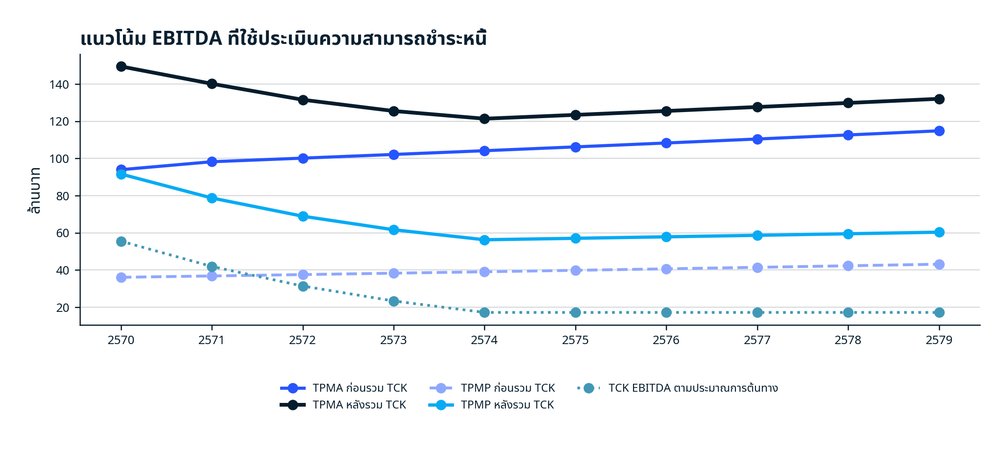
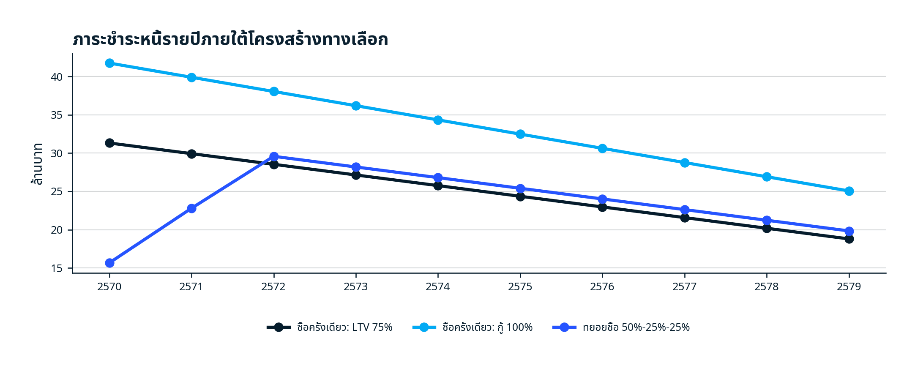
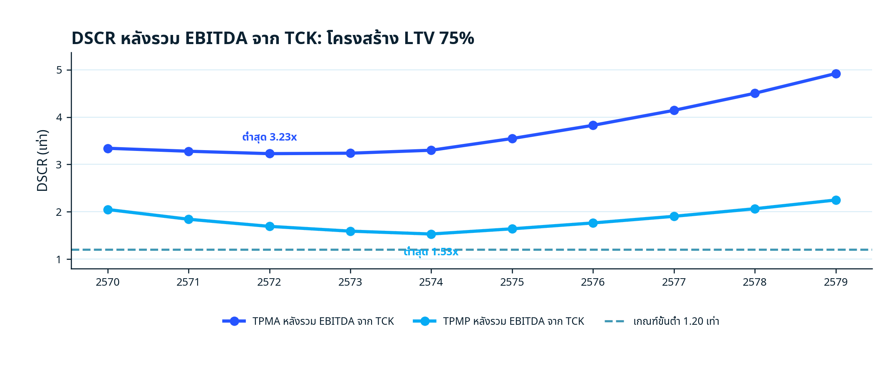
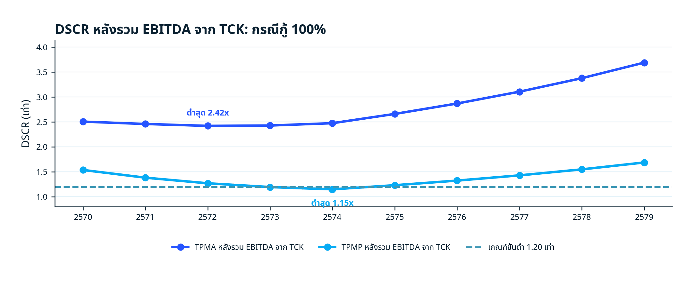
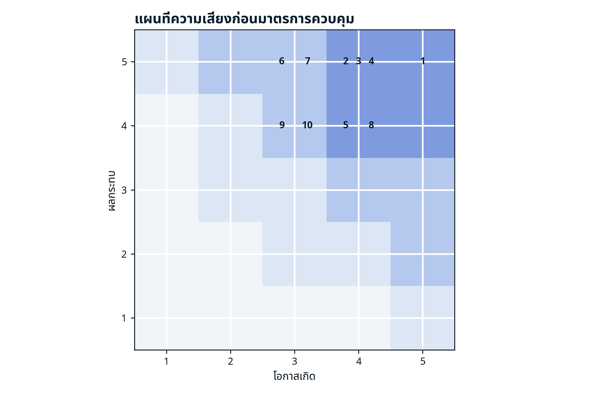
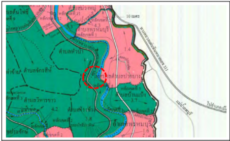
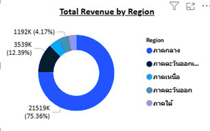
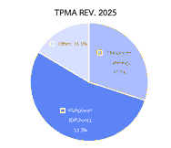
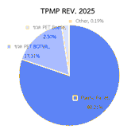
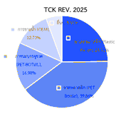

การซื้อสำนักงานและสินทรัพย์ที่สร้างรายได้จาก TCK แบบ Asset Purchase
เปรียบเทียบผู้กู้ TPMA และ TPMP
สรุปผลการประเมินจากมุมมองผู้ให้สินเชื่อและผู้ลงทุน
เห็นควรเดินหน้าธุรกรรมแบบมีเงื่อนไข โดยให้ TPMA เป็นผู้กู้หลัก ใช้โครงสร้าง LTV ไม่เกิน 75% และให้ผู้ถือหุ้นลงทุนอย่างน้อย 25% พร้อมแยกกระแสเงินสดของสินทรัพย์ที่ซื้ออย่างชัดเจน
| ประเด็น | ข้อสรุป |
|---|---|
| ความเป็นไปได้ทางการเงิน | ผ่านภายใต้ TPMA และ LTV 75%; TPMP ผ่านแบบมีเงื่อนไข |
| โครงสร้างที่แนะนำ | TPMA / LTV 75% / อายุ 10 ปี / เงินต้นเท่ากัน / DSRA 6 เดือน |
| วิธีซื้อ | Asset Purchase แบบแยกสินทรัพย์และกระแสเงินสด; ทยอยซื้อ 50%-25%-25% หากข้อมูลยังไม่ครบ |
| ข้อสรุป | Conditional Go – อนุมัติหลักการโดยมีเงื่อนไขก่อนปิดธุรกรรมและก่อนเบิกแต่ละงวด |
จัดทำเฉพาะหัวข้อ 1, 2, 3 และ 4 ตามขอบเขตที่ได้รับมอบหมาย
รายงานฉบับนี้ประเมินความเป็นไปได้ของการให้ TPMA หรือ TPMP กู้เงินเพื่อซื้อสำนักงานและสินทรัพย์ที่สร้างรายได้จาก TCK โดยซื้อเฉพาะสินทรัพย์ที่จำเป็นต่อการดำเนินงาน ไม่ซื้อหุ้นหรือรับโอนหนี้สินเดิมของ TCK และไม่ถือว่ารายได้ของ TCK ทั้งกิจการจะโอนมาโดยอัตโนมัติ
| หัวข้อ | สาระที่ประเมิน | ผลลัพธ์ |
|---|---|---|
| 1 Financial Analysis | EBITDA, CFADS, โครงสร้างเงินกู้, ตารางชำระหนี้, DSCR และความไว | ความสามารถชำระหนี้ |
| 2 Risk Assessment | ความเสี่ยงด้านข้อมูล ธุรกรรม กฎหมาย กระแสเงินสด และการดำเนินงาน | มาตรการควบคุม |
| 3 Investment Summary | เปรียบเทียบผู้กู้และโครงสร้างทางเลือก | ข้อเสนอเพื่อพิจารณา |
| 4 Strategic Roadmap | ลำดับการตรวจสอบ ปิดธุรกรรม เบิกเงิน และติดตามผล | แผนดำเนินงาน |
ผลการประเมินเป็นแบบจำลองเชิงสินเชื่อเบื้องต้น ไม่ใช่รายงานสอบบัญชีหรือการประเมินราคาทรัพย์สิน และต้องปรับปรุงอีกครั้งเมื่อมีราคาซื้อขายจริง รายงานประเมินหลักประกัน รายการสินทรัพย์ และข้อมูลหนี้เดิมครบถ้วน
ประเมินความสามารถชำระหนี้ภายใต้ผู้กู้และโครงสร้างเงินทุนทางเลือก
ธุรกรรมนี้เป็นการจัดโครงสร้างทางการเงินภายในกลุ่มบริษัท ภายใต้รูปแบบ Multi-entity Financing Structure โดยมีการแบ่งบทบาทหน้าที่ของแต่ละนิติบุคคลให้สอดคล้องกับลักษณะการถือครองสินทรัพย์ การดำเนินงาน และแหล่งที่มาของกระแสเงินสดของธุรกิจ
โครงสร้างหลักของธุรกรรมประกอบด้วย:
ทำหน้าที่เป็นผู้กู้และผู้ระดมทุนหลัก (Financing Vehicle / Issuer) โดยเป็นนิติบุคคลที่เข้าทำสัญญากู้ยืมกับแหล่งเงินทุนภายนอกภายใต้ธุรกรรมการกู้ยืม รวมถึงเป็นผู้รับภาระดอกเบี้ยและภาระชำระคืนเงินต้นตามเงื่อนไขของเงินกู้
ทำหน้าที่เป็นบริษัทดำเนินงานหลัก (Operating Company / Cash Generator) โดยเป็นผู้รับโอนสินทรัพย์และธุรกิจหลักบางส่วน ได้แก่ ที่ดิน โรงงาน และธุรกิจบรรจุภัณฑ์ เพื่อใช้ในการดำเนินธุรกิจและสร้างกระแสเงินสดหลักของโครงการ
ทำหน้าที่เป็นผู้ถือครองสินทรัพย์และผู้ดำเนินธุรกิจเดิม (Asset Seller / Legacy Operator) ก่อนการปรับโครงสร้าง และยังคงมีส่วนเกี่ยวข้องกับการดำเนินงานและกระแสเงินสดบางส่วนภายหลังธุรกรรม
เพื่อประเมินความอ่อนไหวของโครงการต่อการเปลี่ยนแปลงของผลการดำเนินงาน รายได้ กระแสเงินสด และความสามารถในการชำระหนี้ แบบจำลองทางการเงินฉบับนี้ได้จัดทำการวิเคราะห์ภายใต้หลายสมมติฐาน (Scenario-based Analysis) เพื่อสะท้อนระดับความไม่แน่นอนที่อาจเกิดขึ้นภายหลังการปรับโครงสร้างธุรกิจและโครงสร้างทางการเงินของกลุ่มบริษัท
แบบจำลองทุกกรณีอ้างอิงข้อมูลจากงบการเงินย้อนหลังปี 2564–2567 ของแต่ละบริษัทเท่าที่มีข้อมูล รวมถึงข้อมูล unaudited ของปี 2568 และข้อมูล unaudited ระหว่างกาลของปี 2569 เช่น งบ 3M/2569, 4M/2569 ในกรณีที่มีข้อมูล โดยข้อมูลดังกล่าวถูกนำมาใช้ร่วมกันและมีการ annualized บางรายการเพื่อให้สามารถสะท้อนแนวโน้มและความเป็นไปได้ของผลการดำเนินงานในปี 2569 ได้เหมาะสมมากขึ้น ขณะที่ประมาณการในปีถัดไปจัดทำขึ้นภายใต้สมมติฐานทางธุรกิจ การเติบโต รายได้ ต้นทุน และสภาพคล่องที่แตกต่างกันในแต่ละกรณีศึกษา
Worst Case Scenario จัดทำขึ้นภายใต้แนวทาง conservative และให้ความสำคัญกับ downside risk ของธุรกิจเป็นสำคัญ ในกรณีที่ผลการดำเนินงานของบางบริษัทมีแนวโน้มเป็น downside อยู่แล้ว แบบจำลองจะสมมติให้แนวโน้มดังกล่าวดำเนินต่อเนื่องในช่วงประมาณการ ขณะที่ธุรกิจหรือรายการที่มีแนวโน้มเป็น upside จะไม่ได้ตั้งสมมติฐานการเติบโตเชิงรุกเพิ่มเติม และส่วนใหญ่จะถูกสมมติให้เติบโตในระดับต่ำหรือทรงตัว ขณะที่ต้นทุนเเละค่าใช้จ่ายจะถูกวางสมมติฐานให้เป็นไปตามแนวทาง downside เพื่อประเมินความสามารถในการรองรับภาระหนี้และความยืดหยุ่นของโครงสร้างธุรกรรมภายใต้กรณีที่ผลการดำเนินงานต่ำกว่าสมมติฐานเชิงบวกของบริษัท
Base Case Scenario จัดทำขึ้นภายใต้แนวทาง conservative growth โดยเน้นสมมติฐานการเติบโตในระดับค่อนข้างระมัดระวัง และไม่ได้ตั้งสมมติฐานการเติบโตเชิงรุกหรือการฟื้นตัวในระดับสูงเกินสมควร
ในกรณีที่บางธุรกิจยังมีแนวโน้ม downside แบบจำลองจะยังคงสะท้อนแนวโน้มดังกล่าวต่อเนื่อง แต่ในระดับที่ผ่อนคลายกว่ากรณี Worst Case ขณะที่ธุรกิจหรือรายการที่มีแนวโน้มเป็น upside จะถูกสมมติให้เติบโตในระดับต่ำถึงปานกลาง เพื่อสะท้อนภาพการดำเนินธุรกิจภายใต้สมมติฐานที่อยู่ในระดับปกติ (Normalized Operating Scenario)
สมมติฐานด้านต้นทุน ค่าใช้จ่าย EBITDA margin และสภาพคล่องจะถูกกำหนดไว้ในระดับกลาง ๆ เพื่อสะท้อนความเสี่ยงด้านการดำเนินงานและความสามารถในการสร้างกระแสเงินสดของธุรกิจภายใต้กรณีที่ผลการดำเนินงานไม่ได้อ่อนแอเท่ากรณี Worst Case แต่ยังคงอยู่ภายใต้แนวทางการวิเคราะห์แบบระมัดระวัง
Best Case Scenario จัดทำขึ้นโดยอ้างอิงจากประมาณการและสมมติฐานที่ได้รับจากฝ่ายบริหาร รวมถึงสมมติฐานเชิงบวกเกี่ยวกับการเติบโตของรายได้ และ business plan ของฝ่ายบริหาร ขณะที่ต้นทุน ค่าใช้จ่าย และตัวแปรด้านการดำเนินงานบางรายการจะถูกกำหนดในระดับเฉลี่ยหรือต่ำกว่ากรณีฐาน เพื่อสะท้อนกรณีที่ธุรกิจสามารถดำเนินงานได้ตามเป้าหมายและสร้าง operating leverage ได้ดีขึ้นในระยะถัดไป
กรณี Best Case จึงถูกใช้เพื่อประเมิน upside potential ของ profitability operating cash flow และความสามารถในการรองรับภาระหนี้ของโครงการภายใต้กรณีที่ผลการดำเนินงานสามารถปรับตัวได้ดีกว่าสมมติฐานในกรณีฐานอย่างมีนัยสำคัญ
ใช้ข้อมูลอ้างอิงงบการเงิน audited ย้อนหลังสำหรับปี 2564–2567 งบการเงิน unaudited ของปี 2568 และงบระหว่างการ 4M/2569 ที่นำมาทำ Annualized
รายได้จากขาย
รายได้ดอกเบี้ยรับ: สมมติฐานให้เป็นไปตามปี 2569F (Annualized) ทั้ง 3 กรณี
ต้นทุนขาย
ค่าใช้จ่ายในการขาย
ค่าใช้จ่ายในการบริหาร: สมมติฐานให้ปี 2569F ใช้ตามข้อมูล Annualized (แบ่ง portion Selling expense กับ Admin expense) เเละให้ %Admin expense/Total revenue ตั้งเเต่ปี 2570F-2574F เท่ากับ Avg.ปี 2564-2567 มีค่าเท่ากับ 6.16% ทั้ง 3 กรณี
Corporate income tax: ถูกสมมติให้เป็นศูนย์ในช่วงประมาณการที่เกี่ยวข้อง เนื่องจากบริษัทได้รับสิทธิประโยชน์ยกเว้นภาษีเงินได้นิติบุคคลตามเงื่อนไขที่ได้รับอนุมัติ
Financial costs: สมมติฐานให้ปี 2569F ใช้ตามข้อมูล Annualized และให้ปี 2570F-2574F เท่ากับข้อมูลค่าใช้จ่ายทางการเงินเดือนล่าสุด (เมษายน ปี 2569) ที่นำมาทำ annualized
สมมติฐานบางรายการในงบดุล ถูกใช้เป็น balancing assumption ภายใต้กรอบ historical behavior และข้อมูลที่มีอยู่ เนื่องจากข้อจำกัดด้านข้อมูล โดยมูลค่ารายการดังกล่าวให้เกิดผลกระทบต่อภาพรวมของแบบจำลองไปในทางที่ไม่เอื้อต่อมุมมองเชิงบวก และพยายามให้เป็นส่วนที่ไม่ถือเป็นสาระสำคัญต่อภาพรวมของแบบจำลอง
รายการที่ไม่ใช่รายการหลัก ตั้งสมมติฐานให้เป็นไปตามสิ่งที่เกิดขึ้นในปี 2568 และ/หรือ ปี 2569F (Annualized)
ลูกหนี้การค้า: สมมติฐานให้ปี 2569F-2574F มี DSO (Days Sales Outstanding) เท่ากับปี 2568 ที่มีค่าเท่ากับประมาณ 72 วันถึงจะเรียกเก็บหนี้จากลูกหนี้ได้ในเเต่ละครั้ง ทั้ง 3 กรณีซึ่งยังอยู่ในกรอบที่ระบุในหมายเหตุประกอบงบการเงินปี 2567 ว่าบริษัทให้สินเชื่อลูกค้าที่ 15-90 วัน
สินค้าคงเหลือ: สมมติฐานให้ปี 2569F-2574F มี DIO (Days Inventory Outstanding) เท่ากับปี 2568 ที่มีค่าเท่ากับประมาณ 79 วันถึงจะขายสินค้าออกได้เเต่ละรอบ ทั้ง 3 กรณี
เจ้าหนี้การค้า: สมมติฐานให้ปี 2569F-2574F มี DPO (Days Payable Outstanding) เท่ากับปี 2568 ที่มีค่าเท่ากับประมาณ 77 วันถึงจะถึงกำหนดจ่ายหนี้เเก่เจ้าหนี้ได้ในเเต่ละรอบ ทั้ง 3 กรณี
เงินให้กู้ยืมระยะสั้นแก่บริษัทที่เกี่ยวข้องกันตามตั๋วสัญญาใช้เงินประเภทเมื่อทวงถาม: ตั้งสมมติฐานให้คงที่ ไม่มีการชำระคืนเงินต้นมาที่บริษัทตลอดระยะเวลาที่ forecast ในเเบบจำลอง ทั้ง 3 กรณี ทั้งนี้ ส่วนที่เป็นเงินให้กู้ยืมแก่บริษัทใหญ่ ถูกตั้งสมมติฐานให้มีอัตราดอกเบี้ยเป็น 0 ตามการประมาณการจากข้อมูลปี 2568 ที่รายได้รับจากดอกเบี้ยลดลงอย่างมีนัยสำคัญ คงเหลือไว้เเต่ส่วนดอกเบี้ยรับจากเงินให้กู้ยืมแก่บริษัทและกิจการที่เกี่ยวข้องกัน ซึ่งในแบบจำลองให้มีการชำระดอกเบี้ยเข้ามาทุกปี บนอัตราดอกเบี้ยที่อาจมีการลดลง ตามเเนวโน้มที่เกิดขึ้นใน 4M/2569
PPE: ตั้งสมมติฐานให้เป็นไปตามความสอดคล้องกับปี 2568 ทั้ง 3 กรณี
เงินกู้ยืมระยะสั้น: สมมติฐานให้คงที่ ไม่มีการชำระคืนเงินต้นมาที่บริษัทตลอดระยะเวลาที่ forecast ในเเบบจำลอง ทั้ง 3 กรณี ในส่วนของเงินกู้ยืมระยะสั้นจากบริษัทที่เกี่ยวข้องกันถูกตั้งสมมติฐานว่าไม่มีการจ่ายดอกเบี้ยทางการเงินนี้ออกไปเป็น cash จริง ทำให้มีการสะสมอยู่ในดอกเบี้ยค้างจ่าย ขณะที่เงินกู้ยืมจากบุคคลมีอัตราดอกเบี้ยเป็น 0
เงินกู้ยืมระยะยาวตามสัญญาปรับปรุงโครงสร้างหนี้: อ้างอิงข้อมูลในหมายเหตุประกอบงบปี 2567 ทั้ง 3 กรณี ซึ่งพอจะช่วยให้ตั้งสมมติฐานจำนวนหนี้ จำนวนเงินต้นทยอยจ่ายคืน กำหนดการชำระ ดอกเบี้ยที่ต้องจ่าย ดอกเบี้ยตั้งพัก และข้อมูลอื่นๆที่เกี่ยวข้อง เนื่องจากขาดข้อมูลในส่วนนี้จากบริษัท ดังนั้น ประมาณการที่เกิดขึ้น อาจใกล้เคียงหรืออาจไม่เป็นไปตามแผนการชำระหนี้ของบริษัทได้
หนี้สินภายใต้สัญญาเช่าทางการเงิน: อ้างอิงข้อมูลในหมายเหตุประกอบงบปี 2567 ทั้ง 3 กรณี ซึ่งพอจะช่วยให้ตั้งสมมติฐานและการเคลื่อนไหวของรายการได้ระดับนึง อาจใกล้เคียงหรืออาจไม่เป็นไปตามการปฏิบัติขิงบริษัทจริงได้
ใช้ข้อมูลอ้างอิงงบการเงิน audited ย้อนหลังสำหรับปี 2567 งบการเงิน unaudited ของปี 2568 และงบระหว่างการ 4M/2569 ที่นำมาทำ Annualized
รายได้จากขาย
รายได้อื่นๆ: สมมติฐานให้เป็นค่ากลาง (Median) ระหว่างปี 2568 และ 2569F (Annualized) ทั้ง 3 กรณี
ต้นทุนขาย
ค่าใช้จ่ายในการขายและบริหาร
Corporate income tax: 20% ของ EBT ทั้ง 3 กรณี
Financial costs: สมมติฐานให้ปี 2569F ใช้ตามข้อมูล Annualized และให้ปี 2570F-2574F เท่ากับปี 2569F (Annualized) ทั้ง 3 กรณี
ใช้ข้อมูลอ้างอิงงบการเงิน audited ย้อนหลังสำหรับปี 2564–2568 และงบระหว่างการ 3M/2569 ที่นำมาทำ Annualized
รายได้จากขาย
รายได้อื่นๆ: สมมติฐานให้เป็น 0 ทั้ง 3 กรณี
ต้นทุนขาย
ค่าใช้จ่ายในการขายและบริหาร
Corporate income tax: 20% ของ EBT ทั้ง 3 กรณี
Financial costs: สมมติฐานให้ปี 2569F ใช้ตามข้อมูล Annualized และให้ปี 2570F-2574F เท่ากับปี 2569F (Annualized) ทั้ง 3 กรณี
ทั้งนี้ สมมติฐานทั้งหมดเป็นเพียงกรอบการประมาณการเพื่อใช้ในการวิเคราะห์ความเป็นไปได้ของธุรกรรมเบื้องต้นเท่านั้น และผลลัพธ์จริงอาจแตกต่างจากประมาณการได้จากปัจจัยด้านเศรษฐกิจ การดำเนินงาน สภาพตลาด ความสามารถในการบริหารธุรกิจ และปัจจัยอื่นที่เกี่ยวข้องในอนาคต
ประมาณการรายได้ของกลุ่มบริษัทจัดทำขึ้นโดยอ้างอิงข้อมูลผลการดำเนินงานย้อนหลัง งบการเงิน audited ข้อมูล unaudited ล่าสุด ข้อมูล customer pipeline, pending orders และข้อมูลประมาณการที่ได้รับจากฝ่ายบริหารของแต่ละบริษัท ภายใต้สมมติฐานที่แตกต่างกันในแต่ละกรณีศึกษา
สำหรับ TCK ซึ่งเป็นธุรกิจเดิมก่อนการปรับโครงสร้าง แบบจำลองอ้างอิงผลการดำเนินงานย้อนหลังปี 2564–2567 ร่วมกับข้อมูลงบ unaudited ปี 2568 และงบระหว่างกาล 4M/2569 ที่ถูกนำมาทำ annualized เพื่อใช้เป็นฐานประมาณการของปี 2569F โดยแนวโน้มรายได้ในช่วงประมาณการยังสะท้อนแรงกดดันจากผลการดำเนินงานที่ชะลอตัวลงในช่วงที่ผ่านมา
ภายใต้กรณี Worst Case แบบจำลองสะท้อนแนวโน้ม downside continuation โดยให้รายได้ในช่วงปี 2570F–2574F ปรับลดลงต่อเนื่องตาม trend ที่เกิดขึ้นในปี 2569F (Annualized) ขณะที่ Base Case และ Best Case สะท้อนสมมติฐานการชะลอตัวที่เริ่มผ่อนคลายลงในระยะถัดไป และค่อย ๆ กลับเข้าสู่ระดับการเติบโตในลักษณะที่สอดคล้องกับแนวโน้มอุตสาหกรรมภายใต้แนวทาง conservative growth
ในส่วนของรายได้ดอกเบี้ยรับของ TCK แบบจำลองสะท้อนการปรับลดลงอย่างมีนัยสำคัญของรายได้ดอกเบี้ยเมื่อเทียบกับ historical periods โดยอ้างอิงข้อมูลปี 2568 และ 4M/2569 เป็นสำคัญ ส่งผลให้แบบจำลองตั้งสมมติฐานให้รายได้ดอกเบี้ยรับอยู่ในระดับใกล้เคียงกับปี 2569F (Annualized) ภายใต้ทั้ง 3 กรณีศึกษา
สำหรับ TPMP ซึ่งถูกกำหนดให้เป็นบริษัทดำเนินงานหลักภายหลังการปรับโครงสร้าง ประมาณการรายได้อ้างอิงข้อมูลงบ unaudited ปี 2568 งบระหว่างกาล 4M/2569 ที่นำมาทำ annualized ข้อมูล customer pipeline pending orders และ utilization rate ของโรงงานเป็นสำคัญ
ภายใต้กรณี Worst Case แบบจำลองตั้งสมมติฐานให้รายได้เติบโตในระดับจำกัด และไม่มีการเติบโตเพิ่มเติมอย่างมีนัยสำคัญภายหลังปี 2569F เพื่อสะท้อนความเสี่ยงด้าน customer conversion operating ramp-up และความไม่แน่นอนของรายได้ในช่วงเริ่มต้นดำเนินธุรกิจ
สำหรับ Base Case แบบจำลองสะท้อนสมมติฐานการเติบโตในระดับใกล้เคียงกับแนวโน้มอุตสาหกรรมโดยรวม ขณะที่ Best Case สะท้อนประมาณการตาม business plan และข้อมูลที่ได้รับจากฝ่ายบริหารในช่วงปีแรกของการดำเนินงาน ก่อนกลับเข้าสู่อัตราการเติบโตในระดับปกติของอุตสาหกรรมในระยะถัดไป
ในส่วนของ TPMA ประมาณการรายได้อ้างอิงข้อมูลผลการดำเนินงานย้อนหลังปี 2564–2568 และงบระหว่างกาล 3M/2569 ที่นำมาทำ annualized โดยกรณี Worst Case และ Base Case ตั้งสมมติฐานการเติบโตในระดับจำกัด ขณะที่ Best Case สะท้อนสมมติฐานเชิงบวกจากฝ่ายบริหาร รวมถึง operating leverage ที่ปรับตัวดีขึ้นในระยะถัดไป
ประมาณการต้นทุนและค่าใช้จ่ายของกลุ่มบริษัทจัดทำขึ้นโดยอ้างอิงข้อมูล historical performance งบการเงิน audited ข้อมูล unaudited ล่าสุด ตลอดจนแนวโน้มการดำเนินธุรกิจและสมมติฐานด้าน operating efficiency ภายใต้แต่ละกรณีศึกษา เพื่อใช้ประเมิน profitability operating leverage และความสามารถในการสร้าง operating cash flow ของโครงการภายหลังการปรับโครงสร้าง
ต้นทุนขาย (Cost of Goods Sold: COGS) ของแต่ละบริษัทถูกประมาณการโดยอ้างอิงสัดส่วนต้นทุนขายต่อรายได้ (%COGS/Sales) จากข้อมูลย้อนหลัง รวมถึงแนวโน้มต้นทุนล่าสุดที่สะท้อนในงบ unaudited และงบระหว่างกาล โดยในกรณี Worst Case แบบจำลองจะใช้สมมติฐานต้นทุนในระดับค่อนข้างสูง เพื่อสะท้อนความเสี่ยงด้าน margin pressure operating inefficiency และข้อจำกัดด้าน economies of scale ขณะที่ Base Case และ Best Case จะสะท้อน operating efficiency utilization rate และ operating leverage ที่ปรับตัวดีขึ้นตามลำดับ
สำหรับค่าใช้จ่ายในการขายและบริหาร (SG&A) แบบจำลองอ้างอิง historical cost structure และสัดส่วนค่าใช้จ่ายต่อรายได้ที่เกิดขึ้นจริงในอดีต โดยค่าใช้จ่ายบางส่วนยังคงมีลักษณะใกล้เคียง fixed cost ในระยะสั้น ส่งผลให้ระดับ profitability และ EBITDA margin มีความอ่อนไหวต่อการเปลี่ยนแปลงของรายได้ในแต่ละกรณีศึกษา
ในส่วนของค่าใช้จ่ายทางการเงิน (Financial Costs) แบบจำลองอ้างอิงข้อมูลภาระหนี้ โครงสร้างการชำระหนี้ และข้อมูลที่เปิดเผยในหมายเหตุประกอบงบการเงินเท่าที่มีอยู่ รวมถึงข้อมูล unaudited ล่าสุด โดยในบางกรณี แบบจำลองได้ใช้สมมติฐานเพิ่มเติมเกี่ยวกับ timing ของการชำระดอกเบี้ย การสะสมดอกเบี้ยค้างจ่าย การ refinance และ/หรือ roll-over ของหนี้บางส่วน เพื่อให้สอดคล้องกับ projected liquidity และ debt servicing capacity ของโครงการในแต่ละช่วงเวลา
สำหรับ TCK แบบจำลองยังคงสะท้อนข้อจำกัดบางส่วนด้านข้อมูล โดยเฉพาะในส่วนของรายละเอียดภาระหนี้และรายการทางการเงินบางรายการภายหลังปี 2568 เนื่องจากยังไม่มีหมายเหตุประกอบงบการเงินที่ครบถ้วน ส่งผลให้บางสมมติฐานจำเป็นต้องอ้างอิง historical behavior และแนวโน้มจากข้อมูลที่มีอยู่เพื่อให้ประมาณการสามารถสะท้อนสภาพการดำเนินงานได้อย่างเหมาะสม
นอกจากนี้ แบบจำลองยังคงพิจารณาความเสี่ยงด้านต้นทุนและค่าใช้จ่ายที่อาจเกิดขึ้นจริง เช่น ความผันผวนของต้นทุนวัตถุดิบ operating cost inflation ความล่าช้าในการรับรู้รายได้ ความสามารถในการควบคุม SG&A และความเสี่ยงด้านต้นทุนทางการเงินภายใต้สภาวะสภาพคล่องที่แตกต่างกันในแต่ละกรณีศึกษา
ประมาณการกำไรขาดทุนของกลุ่มบริษัทจัดทำขึ้นโดยอ้างอิงจากประมาณการรายได้ ต้นทุนขาย ค่าใช้จ่ายในการขายและบริหาร ต้นทุนทางการเงิน และสมมติฐานทางธุรกิจภายใต้แต่ละกรณีศึกษา เพื่อใช้ประเมิน profitability ความสามารถในการสร้าง EBITDA และศักยภาพในการรองรับภาระหนี้ของโครงการภายหลังการปรับโครงสร้าง
สำหรับ TCK ผลการดำเนินงานในแบบจำลองยังสะท้อนแรงกดดันจากแนวโน้มรายได้ที่ชะลอตัวลงในช่วงที่ผ่านมา ส่งผลให้ profitability และ EBITDA margin ภายใต้กรณี Worst Case อยู่ในระดับค่อนข้างจำกัด โดยเฉพาะภายใต้สมมติฐานที่รายได้ยังคงปรับลดลงต่อเนื่อง ขณะที่ต้นทุนขายและค่าใช้จ่ายบางส่วนยังมีลักษณะใกล้เคียง fixed cost ส่งผลให้ operating leverage ของธุรกิจยังไม่สามารถปรับตัวดีขึ้นได้อย่างมีนัยสำคัญในระยะสั้น
ภายใต้กรณี Base Case และ Best Case แบบจำลองสะท้อนการชะลอตัวของผลการดำเนินงานที่เริ่มผ่อนคลายลง และค่อย ๆ กลับเข้าสู่ระดับการดำเนินงานที่มีเสถียรภาพมากขึ้น ส่งผลให้ EBITDA margin และ profitability มีแนวโน้มปรับตัวดีขึ้นอย่างค่อยเป็นค่อยไปตามแนวโน้มอุตสาหกรรมและ operating efficiency ที่ดีขึ้นในระยะถัดไป
ในส่วนของ TPMP ซึ่งถูกกำหนดให้เป็นบริษัทดำเนินงานหลักภายหลังการปรับโครงสร้าง ผลการดำเนินงานของแบบจำลองสะท้อน operating ramp-up phase ของธุรกิจเป็นสำคัญ โดยภายใต้กรณี Worst Case profitability ของธุรกิจยังอยู่ในระดับจำกัดจากข้อสมมติฐานด้าน customer conversion utilization rate และ operating efficiency ที่ค่อนข้างระมัดระวัง
ขณะที่ Base Case และ Best Case สะท้อน operating leverage ที่ค่อย ๆ ปรับตัวดีขึ้นตามระดับรายได้ utilization rate ของโรงงาน และ customer pipeline ที่เพิ่มขึ้น ส่งผลให้ EBITDA และ operating cash flow ของ TPMP มีแนวโน้มปรับตัวดีขึ้นอย่างมีนัยสำคัญเมื่อเทียบกับกรณี Worst Case
สำหรับ TPMA แบบจำลองสะท้อนบทบาทในฐานะ funding vehicle และผู้บริหารกระแสเงินสดภายใต้โครงสร้างธุรกรรม มากกว่าการเป็นบริษัทดำเนินงานหลัก โดย profitability ของ TPMA จึงมีความเชื่อมโยงกับกระแสเงินสดที่ได้รับจาก TPMP และโครงสร้าง cash flow waterfall ของโครงการเป็นสำคัญ
ภายใต้โครงสร้างดังกล่าว กระแสเงินสดจากการดำเนินธุรกิจของ TPMP ถูกกำหนดให้ใช้รองรับภาระดอกเบี้ยของโครงการ ขณะที่กระแสเงินสดจากค่าเช่าที่ได้รับจาก TCK จะเป็นแหล่งสำคัญในการสนับสนุนการทยอยชำระคืนเงินต้นภายใต้ธุรกรรม โดย TPMA จะทำหน้าที่รับและส่งผ่านกระแสเงินสดดังกล่าวไปยังแหล่งเงินทุนภายนอกตามโครงสร้างธุรกรรมที่กำหนด
อย่างไรก็ตาม ในกรณีที่ TCK ไม่สามารถรองรับภาระค่าเช่าได้ตามสมมติฐาน หรือ TPMP มีผลการดำเนินงานต่ำกว่าคาดอย่างมีนัยสำคัญ ภาระในการรองรับต้นทุนทางการเงินและภาระชำระคืนหนี้อาจกลับมาอยู่ในระดับของ TPMA มากขึ้น ซึ่งอาจส่งผลให้ profitability liquidity profile และ debt servicing capacity ของโครงสร้างธุรกรรมอยู่ในระดับตึงตัวมากขึ้นภายใต้บางกรณีศึกษา
ทั้งนี้ ผลกำไรสุทธิ EBITDA operating cash flow และความสามารถในการรองรับภาระหนี้ของแต่ละบริษัทในแบบจำลองยังขึ้นอยู่กับความสามารถในการดำเนินธุรกิจจริง การบริหารต้นทุน การรักษาระดับ EBITDA margin ความต่อเนื่องของ customer pipeline และ pending orders รวมถึงสภาพเศรษฐกิจและสภาวะการแข่งขันในอุตสาหกรรมในอนาคต
ประมาณการกระแสเงินสดของโครงการจัดทำขึ้นเพื่อประเมินความสามารถในการสร้างสภาพคล่อง ความสามารถในการรองรับภาระต้นทุนทางการเงิน และศักยภาพในการชำระคืนเงินต้นภายใต้โครงสร้างธุรกรรมที่กำหนด โดยแบบจำลองให้ความสำคัญกับ operating cash flow, EBITDA, working capital movement, และ intercompany cash flow structure เป็นสำคัญ
สำหรับ TCK กระแสเงินสดจากการดำเนินงานในแบบจำลองยังสะท้อนแรงกดดันจากแนวโน้มผลการดำเนินงานที่ชะลอตัวลง รวมถึงข้อจำกัดด้าน profitability และ operating cash flow ภายใต้กรณี Worst Case ส่งผลให้ liquidity profile ของธุรกิจยังคงอยู่ในระดับค่อนข้างตึงตัวในบางช่วงเวลา
ภายใต้แบบจำลองปัจจุบัน ทุกกรณีศึกษายังคงตั้งสมมติฐานให้ TCK มีการกู้ยืมเงินเพิ่มเติมระหว่างช่วงประมาณการ เนื่องจากหากไม่มีแหล่งเงินทุนเพิ่มเติมดังกล่าว ระดับกระแสเงินสดและสภาพคล่องของ TCK จะมีแนวโน้มติดลบภายใต้ทุกกรณีศึกษา
ในส่วนของ TPMP ซึ่งถูกกำหนดให้เป็นบริษัทดำเนินงานหลักของโครงการ แบบจำลองสะท้อนให้เห็นว่า operating cash flow ของ TPMP เป็นแหล่งสำคัญในการรองรับภาระดอกเบี้ยของโครงสร้างธุรกรรม ขณะที่กระแสเงินสดจากค่าเช่าที่ได้รับจาก TCK ถูกใช้เป็นแหล่งสำคัญในการสนับสนุนการทยอยชำระคืนเงินต้นภายใต้โครงการ
ภายใต้กรณี Worst Case นั้น operating cash flow ของ TPMP ยังอยู่ในระดับค่อนข้างจำกัดจากข้อสมมติฐานด้าน customer conversion utilization และ operating efficiency ที่ค่อนข้างระมัดระวัง ส่งผลให้ความสามารถในการสะสมกระแสเงินสดเพื่อรองรับ debt service และ amortization ของเงินต้นยังอยู่ในระดับค่อนข้างตึงตัว โดยเฉพาะในกรณีที่ไม่สามารถ refinance หรือ roll-over ภาระหนี้บางส่วนได้ตามสมมติฐาน
สำหรับ Base Case และ Best Case operating cash flow และ liquidity profile ของ TPMP มีแนวโน้มปรับตัวดีขึ้นตามระดับ profitability utilization rate และ customer pipeline ที่เพิ่มขึ้น ส่งผลให้ความสามารถในการรองรับภาระดอกเบี้ยและการทยอยชำระคืนเงินต้นมีความยืดหยุ่นมากขึ้นเมื่อเทียบกับกรณี Worst Case
สำหรับ TPMA แบบจำลองกำหนดให้ทำหน้าที่เป็น funding vehicle และบริหารกระแสเงินสดภายใต้โครงสร้างทางการเงิน มากกว่าการเป็นบริษัทดำเนินงานหลัก โดยกระแสเงินสดที่ได้รับจาก TPMP จะถูกนำไปใช้รองรับภาระชำระคืนแก่แหล่งเงินทุนภายนอกตาม cash flow waterfall ที่กำหนดไว้ในโครงสร้างธุรกรรม
อย่างไรก็ตาม หาก TCK ไม่สามารถรองรับภาระค่าเช่าได้ตามสมมติฐาน หรือ TPMP มีผลการดำเนินงานต่ำกว่าคาดอย่างมีนัยสำคัญ ภาระในการรองรับ debt service และ liquidity support อาจกลับมาอยู่ในระดับของ TPMA มากขึ้น ซึ่งอาจส่งผลให้ liquidity profile และ debt servicing capacity ของโครงสร้างธุรกรรมอยู่ในระดับตึงตัวมากขึ้นในบางกรณีศึกษา
นอกจากนี้ แบบจำลองยังพิจารณาสมมติฐานด้าน refinance roll-over การบริหาร working capital และการสนับสนุนสภาพคล่องระหว่างบริษัทภายในกลุ่ม เพื่อสะท้อนความต่อเนื่องของกระแสเงินสดและความสามารถในการดำเนินธุรกิจของโครงการภายใต้แต่ละ Scenario ที่กำหนดไว้ในแบบจำลองทางการเงิน
| สมมติฐาน | ค่า | หน่วย | หมายเหตุ |
|---|---|---|---|
| มูลค่าสำนักงานและสินทรัพย์ | 232.00 | ล้านบาท | ฐานประเมินธุรกรรม |
| LTV กรณีฐาน | 75% | ของมูลค่าประเมิน | วงเงินต่ำกว่าราคาซื้อหรือราคาประเมิน |
| วงเงินกู้กรณีฐาน | 174.00 | ล้านบาท | 232 × 75% |
| เงินทุนผู้ถือหุ้น | 58.00 | ล้านบาท | ยังไม่รวมภาษี ค่าธรรมเนียม และ CAPEX |
| อัตราดอกเบี้ย | 8.00% | ต่อปี | คงที่เพื่อการวิเคราะห์ |
| อายุเงินกู้ | 10 | ปี | ชำระเงินต้นเท่ากัน |
| CFADS conversion | 70% | ของ EBITDA | ตัวแทนเชิงวิเคราะห์ |
| เกณฑ์ DSCR | 1.20x | ขั้นต่ำ | 1.30x สำหรับ phase gate |
| DSRA | 6 | เดือน | คิดจากภาระหนี้งวดถัดไป |
| แหล่งกระแสเงินสด | 2570 | 2574 | 2579 | ข้อสังเกต |
|---|---|---|---|---|
| TPMA ก่อนรวม TCK | 93.96 | 104.17 | 114.87 | ฐานธุรกิจเดิมและรายได้ที่อยู่ในประมาณการ |
| TPMP ก่อนรวม TCK | 36.10 | 39.07 | 43.14 | เริ่มจาก H1 Trader EBITDA 18.05 ลบ. annualized |
| TCK ตามประมาณการต้นทาง | 55.53 | 17.21 | 17.21 | ลดลงและคงที่ตั้งแต่ปี 2574 เป็นต้นไป |
หมายเหตุ: หน่วย EBITDA เป็นล้านบาท; ไม่ใช้ถ้อยคำอ้างอิงเลขเวอร์ชันของแบบจำลองในเอกสารลูกค้าเพื่อป้องกันความสับสน
ตัวเลข 36.10 ล้านบาทในปี 2570 มาจาก TPMP Trader EBITDA ช่วงมกราคม–มิถุนายน 18.05 ล้านบาทคูณสอง มิใช่ EBITDA ปี 2569 ที่ 18.91 ล้านบาท ทั้งสองตัวเลขจึงอยู่คนละงวดและมีวัตถุประสงค์ต่างกัน
แยกธุรกิจเดิมออกจาก EBITDA ที่คาดว่าจะได้รับจากสินทรัพย์ TCK

รายได้ ลูกค้า สัญญา บุคลากร ใบอนุญาต และเงินทุนหมุนเวียนที่ทำให้ EBITDA เกิดขึ้นจริงต้องโอนมาพร้อมสินทรัพย์ มิฉะนั้นการบวก EBITDA ของ TCK ทั้งจำนวนจะสูงเกินจริง
เปรียบเทียบการซื้อครั้งเดียวและการทยอยซื้อภายใต้เงื่อนไขเดียวกัน
| โครงสร้าง | มูลค่า | เงินกู้ | เงินทุน | หนี้ปีแรก | บทบาท |
|---|---|---|---|---|---|
| A. ซื้อครั้งเดียว – LTV 75% | 232.00 | 174.00 | 58.00 | 31.32 | ฐานแนะนำ |
| B. ซื้อครั้งเดียว – กู้ 100% | 232.00 | 232.00 | 0.00 | 41.76 | ใช้เพื่อทดสอบเพดาน |
| C. ทยอยซื้อ 50%-25%-25% | 232.00 | 174.00 | 58.00 | 15.66 | ลดภาระช่วงเริ่มต้น |

| รายการ | LTV 75% | กู้ 100% | ส่วนต่าง |
|---|---|---|---|
| เงินต้น | 174.00 | 232.00 | 58.00 |
| ดอกเบี้ยรวม 10 ปี | 76.56 | 102.08 | 25.52 |
| ภาระหนี้รวม | 250.56 | 334.08 | 83.52 |
หมายเหตุ: หน่วยล้านบาท; การทยอยซื้อมีดอกเบี้ยรวมเท่ากับโครงสร้าง LTV 75% หากแต่ละ tranche มีอายุ 10 ปีและอัตราดอกเบี้ยเท่ากัน โดยวันครบกำหนดของแต่ละ tranche จะต่างกัน
กรณีฐาน: เงินกู้ 174 ล้านบาท เงินทุนผู้ถือหุ้น 58 ล้านบาท

| ผู้กู้ | ก่อนรวม TCK | หลังรวม TCK | หลังรวมต้นทุนเดิมที่มีข้อมูล | ปีต่ำสุด | ผล |
|---|---|---|---|---|---|
| TPMA | 2.10x | 3.23x | 3.19x | 2572 | ผ่าน |
| TPMP | 0.81x | 1.53x | ยังไม่มีข้อมูลครบ | 2574 | ผ่านแบบมีเงื่อนไข |
ภายใต้ LTV 75% ทั้งสองทางเลือกผ่านเกณฑ์เชิงแบบจำลอง แต่ TPMA มีคุณภาพการชำระหนี้และความทนทานต่อความคลาดเคลื่อนของประมาณการสูงกว่าอย่างชัดเจน
ทดสอบกรณีธนาคารให้วงเงินเต็มมูลค่า 232 ล้านบาทโดยไม่มีเงินทุนผู้ถือหุ้น

| ปี | TPMA DSCR | TPMP DSCR | สถานะ TPMP |
|---|---|---|---|
| 2570 | 2.51x | 1.54x | ผ่าน |
| 2571 | 2.46x | 1.38x | ผ่าน |
| 2572 | 2.42x | 1.27x | ผ่าน |
| 2573 | 2.43x | 1.19x | ต่ำกว่าเกณฑ์ |
| 2574 | 2.47x | 1.15x | ต่ำกว่าเกณฑ์ |
| 2575 | 2.66x | 1.23x | ผ่าน |
| 2576 | 2.87x | 1.32x | ผ่าน |
| 2577 | 3.11x | 1.43x | ผ่าน |
| 2578 | 3.38x | 1.55x | ผ่าน |
| 2579 | 3.69x | 1.69x | ผ่าน |
หมายเหตุ: TPMA DSCR ต่ำสุด 2.42 เท่า หรือประมาณ 2.40 เท่าเมื่อรวมต้นทุนทางการเงินเดิม; TPMP ต่ำกว่า 1.20 เท่าในปี 2573–2574
ไม่แนะนำให้ TPMP กู้ 100% เพราะ DSCR ต่ำสุด 1.15 เท่าและต้องรับรู้ TCK EBITDA ประมาณ 114.9% ในปีตึงตัวจึงจะถึงเกณฑ์ 1.20 เท่า ส่วน TPMA รองรับได้ในเชิงกระแสเงินสด แต่ยังควรคงเงินทุนผู้ถือหุ้นเพื่อสร้างวินัยและรองรับความเสี่ยงด้านมูลค่า
ควบคุมความเสี่ยงด้วยการเบิกวงเงินตามผลงานและความพร้อมของสินทรัพย์
| ระยะ | ปีซื้อ | สัดส่วน | มูลค่า | วงเงินเบิก | เงินผู้ถือหุ้น | TCK EBITDA ที่รับรู้ |
|---|---|---|---|---|---|---|
| ระยะที่ 1 | 2570 | 50% | 116.00 | 87.00 | 29.00 | 50% |
| ระยะที่ 2 | 2571 | 25% | 58.00 | 43.50 | 14.50 | 75% สะสม |
| ระยะที่ 3 | 2572 | 25% | 58.00 | 43.50 | 14.50 | 100% สะสม |
| ปี | เบิกใหม่ | หนี้ต้นงวดหลังเบิก | ภาระหนี้รวม | TPMA DSCR | TPMP DSCR |
|---|---|---|---|---|---|
| 2570 | 87.00 | 87.00 | 15.66 | 5.44x | 2.85x |
| 2571 | 43.50 | 121.80 | 22.79 | 3.98x | 2.10x |
| 2572 | 43.50 | 152.25 | 29.58 | 3.11x | 1.63x |
| 2573 | 0.00 | 134.85 | 28.19 | 3.12x | 1.53x |
| 2574 | 0.00 | 117.45 | 26.80 | 3.17x | 1.47x |
| 2575 | 0.00 | 100.05 | 25.40 | 3.40x | 1.57x |
| 2576 | 0.00 | 82.65 | 24.01 | 3.66x | 1.69x |
| 2577 | 0.00 | 65.25 | 22.62 | 3.95x | 1.82x |
| 2578 | 0.00 | 47.85 | 21.23 | 4.28x | 1.96x |
| 2579 | 0.00 | 30.45 | 19.84 | 4.66x | 2.13x |
หมายเหตุ: DSCR ต่ำสุดแบบทยอยซื้อ: TPMA 3.11 เท่า และ TPMP 1.47 เท่า; ปีซื้อเป็นกรอบตามแบบจำลองและต้องปรับตามกำหนดส่งมอบจริง
ทดสอบการเปลี่ยนแปลงของดอกเบี้ย การรับรู้ TCK EBITDA และอัตราแปลง CFADS
| TCK EBITDA ที่รับรู้ | ดอกเบี้ย 7% | 8% | 9% | 10% |
|---|---|---|---|---|
| 50% | 1.01x | 0.97x | 0.93x | 0.89x |
| 75% | 1.10x | 1.06x | 1.02x | 0.98x |
| 100% | 1.20x | 1.15x | 1.10x | 1.06x |
หมายเหตุ: ค่าที่แสดงปัดทศนิยมสองตำแหน่ง; กรณีรับรู้ 100% และดอกเบี้ย 7% มีค่าจริงประมาณ 1.196 เท่า จึงยังเฉียดต่ำกว่าเกณฑ์ 1.20 เท่า
| CFADS / EBITDA | TPMA: กู้ 100% | TPMP: กู้ 100% | ข้อสรุป |
|---|---|---|---|
| 60% | 2.07x | 0.98x | TPMP ไม่ผ่าน |
| 70% | 2.42x | 1.15x | TPMP ไม่ผ่าน |
| 80% | 2.77x | 1.31x | ทั้งสองผ่าน |
พิจารณาความเสี่ยงก่อนปิดธุรกรรมและมาตรการควบคุมสำหรับผู้ให้สินเชื่อ
จัดอันดับความเสี่ยงตามโอกาสเกิดและผลกระทบต่อความสามารถชำระหนี้

| # | ความเสี่ยง | โอกาส | ผลกระทบ | ระดับ |
|---|---|---|---|---|
| 1 | การพิสูจน์ EBITDA/CFADS ของสินทรัพย์ TCK | 5 | 5 | สูงมาก |
| 2 | การนับรายได้หรือค่าเช่าซ้ำ | 4 | 5 | สูงมาก |
| 3 | ข้อมูลภาระหนี้เดิมของ TPMP ไม่ครบ | 4 | 5 | สูงมาก |
| 4 | การโอนสัญญา ลูกค้า และบุคลากร | 4 | 5 | สูงมาก |
| 5 | ประมาณการ TCK คงที่หลังปี 2574 | 4 | 4 | สูง |
| 6 | ราคาประเมินและ LTV | 3 | 5 | สูง |
| 7 | กรรมสิทธิ์/ภาระผูกพันของสินทรัพย์ | 3 | 5 | สูง |
| 8 | เงินทุนหมุนเวียนและ CAPEX | 4 | 4 | สูง |
| 9 | อัตราดอกเบี้ยและเงื่อนไขธนาคาร | 3 | 4 | ปานกลาง |
| 10 | การบูรณาการและความต่อเนื่องธุรกิจ | 3 | 4 | ปานกลาง |
หมายเหตุ: คะแนนก่อนใช้มาตรการควบคุม; ระดับสูงตั้งแต่ 15 คะแนน และสูงมากตั้งแต่ 20 คะแนน
จัดลำดับจากประเด็นที่กระทบความสามารถชำระหนี้มากที่สุด
| ความเสี่ยง | ระดับ | มาตรการควบคุมที่เสนอ |
|---|---|---|
| EBITDA/CFADS ของสินทรัพย์ไม่เกิดจริง | สูงมาก | จัดทำ carve-out ที่ตรวจสอบได้; ผูกสัญญาลูกค้า รายได้ และบุคลากรกับรายการสินทรัพย์; ใช้บัญชีรับชำระที่ควบคุม |
| นับรายได้หรือค่าเช่าซ้ำ | สูงมาก | ทำ reconciliation รายได้ TPMA/TPMP/TCK; ไม่รวมค่าเช่าหรือเงินสนับสนุนใหม่ 50 ลบ. จนกว่าจะมีสัญญา; แยกรายได้ค่าเช่าเดิม 34.36 ลบ. |
| ข้อมูลหนี้เดิม TPMP ไม่ครบ | สูงมาก | ขอหนังสือยืนยันหนี้ รายการหลักประกัน และ covenant ทั้งหมด; คำนวณ DSCR รวมภาระเดิมก่อนอนุมัติ |
| การโอนสัญญาและใบอนุญาตไม่ครบ | สูงมาก | กำหนดเป็นเงื่อนไขก่อนเบิก; ขอความยินยอมคู่สัญญา; มี transition service agreement ชั่วคราว |
| ประมาณการ TCK ปลายงวดคงที่ | สูง | จัดทำ driver-based forecast ใหม่; ทดสอบ downside; ใช้ cash sweep และ distribution lock-up |
| มูลค่าหลักประกันต่ำกว่าราคาซื้อ | สูง | ใช้วงเงินต่ำกว่าราคาซื้อหรือราคาประเมิน × 75%; ประเมินโดยผู้ประเมินอิสระ; ผู้ถือหุ้นเติมส่วนต่าง |
| กรรมสิทธิ์และภาระผูกพัน | สูง | ตรวจโฉนด/ทะเบียนทรัพย์/ภาระจำนอง; ปลดภาระเดิมก่อนหรือพร้อมปิดธุรกรรม; ความเห็นที่ปรึกษากฎหมาย |
| เงินทุนหมุนเวียนและ CAPEX ไม่พอ | สูง | จัดทำวงเงิน working capital แยก; maintenance CAPEX reserve; ห้ามใช้เงินกู้ซื้อสินทรัพย์ผิดวัตถุประสงค์ |
สินทรัพย์เพียงอย่างเดียวไม่สร้าง EBITDA หากไม่มีสัญญา ลูกค้า บุคลากร ใบอนุญาต และเงินทุนหมุนเวียน ดังนั้นรายการโอนต้องครอบคลุมองค์ประกอบที่ทำให้กระแสเงินสดเกิดขึ้นจริง
กำหนดหลักประกัน กระแสเงินสด covenant และกลไกแก้ไขก่อนเกิดการผิดนัด
| เงื่อนไข | ระดับที่เสนอ | วิธีติดตาม |
|---|---|---|
| DSCR | ไม่น้อยกว่า 1.20x | ทดสอบรายไตรมาส; ใช้ 1.30x เป็น cash trap/phase gate |
| LTV | ไม่เกิน 75% | ใช้ราคาประเมินล่าสุด; ผู้ถือหุ้นเติมส่วนต่าง |
| DSRA | 6 เดือน | ภาระหนี้งวดถัดไป |
| Additional debt | ต้องได้รับความยินยอม | รวมหลักประกันและภาระผูกพันใหม่ |
| Distribution | ห้ามเมื่อ DSCR < 1.30x | หรือมีเหตุผิดนัด/DSRA ไม่ครบ |
| Information | รายไตรมาส/รายปี | management accounts, covenant certificate, งบตรวจสอบ |
หาก DSCR ต่ำกว่า 1.30 เท่า ให้ระงับเงินปันผล ใช้เงินส่วนเกินชำระหนี้ และห้ามเบิกงวดถัดไป; หากต่ำกว่า 1.20 เท่า ให้ผู้ถือหุ้นเติมเงินหรือปรับโครงสร้างหนี้ตามแผนแก้ไขที่ธนาคารอนุมัติ
ธุรกรรมนี้มีลักษณะเป็นธุรกรรมภายในกลุ่มบริษัท (Intercompany Transaction Structure) ซึ่งอาศัยการเคลื่อนย้ายสินทรัพย์ ภาระหนี้ และกระแสเงินสดระหว่างบริษัทที่เกี่ยวข้อง ได้แก่ TCK, TPMP และ TPMA อย่างมีนัยสำคัญ ส่งผลให้ความสามารถในการดำเนินธุรกรรมและการรองรับภาระหนี้ของโครงการมีความเชื่อมโยงกันในระดับสูง
ภายใต้โครงสร้างดังกล่าว กระแสเงินสดหลักของธุรกรรมไม่ได้เกิดจากบริษัทใดบริษัทหนึ่งโดยลำพัง แต่เป็นการอาศัยการส่งผ่านกระแสเงินสดระหว่างบริษัทภายในกลุ่ม เช่น ค่าเช่าจาก TCK ไปยัง TPMP และการส่งผ่านกระแสเงินสดจาก TPMP ไปยัง TPMA เพื่อรองรับภาระ debt service ต่อ lender ภายนอก ดังนั้น หากบริษัทใดบริษัทหนึ่งมีข้อจำกัดด้านสภาพคล่อง ผลการดำเนินงานต่ำกว่าคาด หรือไม่สามารถส่งผ่านกระแสเงินสดได้ตามสมมติฐาน อาจส่งผลกระทบต่อ liquidity profile ของทั้งโครงสร้างธุรกรรมได้อย่างมีนัยสำคัญ
นอกจากนี้ ธุรกรรมยังมีความอ่อนไหวต่อความสามารถในการบริหาร intercompany cash flow และการรักษาความต่อเนื่องของธุรกรรมระหว่างบริษัทในกลุ่ม โดยเฉพาะในกรณีที่บางบริษัทต้องพึ่งพาการกู้ยืมเพิ่มเติมหรือ liquidity support จากบริษัทที่เกี่ยวข้องเพื่อรักษาระดับสภาพคล่องของธุรกิจ
อีกประเด็นสำคัญคือ ภายใต้โครงสร้างปัจจุบัน TPMA แม้จะทำหน้าที่เป็น funding vehicle และผู้รับภาระต่อ lender ภายนอก แต่กระแสเงินสดที่ใช้รองรับภาระดังกล่าวยังคงพึ่งพาความสามารถในการสร้างกระแสเงินสดของ TCK และ TPMP เป็นสำคัญ ส่งผลให้ TPMA มีความเสี่ยงทางอ้อมจาก operating performance และ liquidity profile ของบริษัทที่เกี่ยวข้องภายในกลุ่ม แม้ไม่ได้เป็นผู้ดำเนินธุรกิจหลักโดยตรงก็ตาม
นอกจากนี้ การกำหนดราคา เงื่อนไขการชำระเงิน อัตราดอกเบี้ย หรือเงื่อนไขทางธุรกิจระหว่างบริษัทภายในกลุ่ม อาจไม่ได้สะท้อนลักษณะธุรกรรมในเชิง arm’s length ทั้งหมด และอาจมีการเปลี่ยนแปลงได้ตามแนวทางบริหารสภาพคล่องและนโยบายภายในของกลุ่มบริษัท ซึ่งอาจส่งผลต่อ timing ของกระแสเงินสด ความสามารถในการรองรับ debt service และ projected liquidity ของแต่ละบริษัทในอนาคต
ดังนั้น โครงสร้างธุรกรรมดังกล่าวจึงขึ้นอยู่กับความสามารถในการบริหารความสัมพันธ์ระหว่างบริษัทภายในกลุ่ม การรักษาความต่อเนื่องของกระแสเงินสด และการบริหารสภาพคล่องของแต่ละบริษัทอย่างมีประสิทธิภาพตลอดอายุของธุรกรรม
โครงสร้างธุรกรรมนี้มีความเกี่ยวข้องกับที่ดิน โรงงาน เครื่องจักร และสินทรัพย์ที่เกี่ยวข้องกับธุรกิจ packaging ซึ่งเป็นองค์ประกอบสำคัญต่อความสามารถในการดำเนินธุรกิจและการสร้างกระแสเงินสดของ TPMP ภายหลังการปรับโครงสร้าง
อย่างไรก็ตาม ณ วันที่จัดทำแบบจำลอง แบบจำลองทางการเงินยังไม่ได้สะท้อน movement ของการโอน PPE และสินทรัพย์ถาวรออกจาก TCK อย่างสมบูรณ์ เนื่องจากรายละเอียด final structure และ timing ของการโอนสินทรัพย์ยังมีข้อจำกัดด้านข้อมูล ส่งผลให้ผลกระทบทางบัญชีและทางการเงินที่แท้จริงภายหลังการโอนสินทรัพย์ยังอาจเปลี่ยนแปลงได้ในอนาคต
ทั้งนี้ ภายใต้โครงสร้างที่กำหนด หาก TCK มีภาระค่าเช่าเพิ่มขึ้นจากการใช้สินทรัพย์ภายหลังการปรับโครงสร้าง ย่อมมีแนวโน้มทำให้ค่าเสื่อมราคาในฝั่ง TCK ลดลงจากการลดลงของ PPE บางส่วน ซึ่งอาจส่งผลต่อ EBITDA profitability และโครงสร้างต้นทุนของแต่ละบริษัทภายหลังการโอนสินทรัพย์จริง
นอกจากนี้ ความสามารถในการสร้างรายได้จากสินทรัพย์ดังกล่าวยังขึ้นอยู่กับ utilization rate ประสิทธิภาพการดำเนินงาน ความพร้อมของเครื่องจักร การบริหารต้นทุนการผลิต และความต่อเนื่องของคำสั่งซื้อจากลูกค้า หากประสิทธิภาพการดำเนินงานต่ำกว่าประมาณการ หรือเกิดความล่าช้าในการ ramp-up การผลิต อาจส่งผลให้ operating cash flow และความสามารถในการรองรับภาระหนี้ของโครงการต่ำกว่าที่ประมาณการไว้
ความสามารถในการสร้างรายได้และกระแสเงินสดของโครงการยังขึ้นอยู่กับความต่อเนื่องของคำสั่งซื้อจากลูกค้า ความสามารถในการรักษาฐานลูกค้าเดิม และความสามารถในการรับรู้รายได้ให้เป็นไปตามประมาณการของแบบจำลอง โดยเฉพาะในส่วนของ TPMP ซึ่งยังอยู่ในช่วงเริ่มต้นดำเนินธุรกิจภายหลังการปรับโครงสร้าง
แม้แบบจำลองจะอ้างอิงข้อมูล customer pipeline, pending orders และประมาณการจากฝ่ายบริหารประกอบการวิเคราะห์ แต่รายได้จริงในอนาคตยังมีความอ่อนไหวต่อ customer conversion ระยะเวลาในการรับรู้รายได้ สภาวะการแข่งขัน และภาวะเศรษฐกิจโดยรวม
ดังนั้น หากคำสั่งซื้อใหม่ต่ำกว่าคาด เกิดความล่าช้าในการรับรู้รายได้ หรือไม่สามารถรักษาระดับรายได้ได้ตามสมมติฐาน อาจส่งผลให้ EBITDA operating cash flow และความสามารถในการรองรับภาระหนี้ของโครงการต่ำกว่าที่ประมาณการไว้ในแบบจำลองทางการเงิน
ผลการดำเนินงานของธุรกิจยังมีความเชื่อมโยงกับความต่อเนื่องของฐานลูกค้าเดิม ความสามารถในการรักษาคำสั่งซื้อ และความสามารถในการขยายฐานลูกค้าใหม่ โดยเฉพาะภายหลังการปรับโครงสร้างธุรกิจและการเริ่มดำเนินงานภายใต้โครงสร้างใหม่ของ TPMP
นอกจากนี้ รายได้ของธุรกิจบางส่วนอาจยังมีการพึ่งพาลูกค้ารายใหญ่หรือกลุ่มลูกค้าบางประเภทในระดับหนึ่ง ส่งผลให้ผลการดำเนินงานมีความอ่อนไหวต่อการเปลี่ยนแปลงของคำสั่งซื้อ เงื่อนไขทางการค้า หรือความต่อเนื่องของความสัมพันธ์ทางธุรกิจกับลูกค้ากลุ่มดังกล่าว
ดังนั้น หากเกิดการสูญเสียลูกค้ารายสำคัญ การชะลอตัวของคำสั่งซื้อ หรือ customer concentration สูงกว่าที่ประมาณการไว้ อาจส่งผลให้รายได้ EBITDA และ operating cash flow ของโครงการต่ำกว่าที่ใช้ในแบบจำลอง และกระทบต่อความสามารถในการรองรับภาระหนี้ในอนาคตได้
ธุรกิจของกลุ่มบริษัท โดยเฉพาะธุรกิจด้าน packaging และการผลิต มีความอ่อนไหวต่อความผันผวนของต้นทุนวัตถุดิบ ต้นทุนพลังงาน และต้นทุนการผลิตอื่น ๆ ซึ่งอาจส่งผลต่อ gross margin, EBITDA margin, และ operating cash flow ของธุรกิจ
แม้แบบจำลองทางการเงินจะตั้งสมมติฐานต้นทุนภายใต้แนวทางที่ค่อนข้าง conservative แล้ว แต่หากต้นทุนวัตถุดิบปรับตัวเพิ่มขึ้นเร็วกว่าความสามารถในการปรับราคาขาย หรือไม่สามารถบริหารต้นทุนได้ตามประมาณการ อาจส่งผลให้ profitability และความสามารถในการรองรับภาระหนี้ของโครงการลดลงจากที่คาดการณ์ไว้
นอกจากนี้ ความผันผวนของต้นทุนวัตถุดิบยังอาจส่งผลต่อ working capital requirement และ liquidity profile ของธุรกิจ โดยเฉพาะในช่วงที่ operating cash flow ยังอยู่ในระดับค่อนข้างตึงตัวภายใต้บางกรณีศึกษาในแบบจำลองทางการเงิน
ความสามารถในการดำเนินธุรกิจของโครงการยังขึ้นอยู่กับความเสถียรของกระบวนการผลิต ประสิทธิภาพของโรงงาน และความสามารถในการใช้กำลังการผลิตให้สอดคล้องกับแผนธุรกิจที่กำหนดไว้
เนื่องจาก TPMP อยู่ในช่วงเริ่มต้นของการดำเนินงานภายหลังการปรับโครงสร้าง จึงยังมีความเสี่ยงด้าน operational ramp-up ทั้งในด้านประสิทธิภาพการผลิต การบริหารต้นทุน การจัดการเครื่องจักร และความต่อเนื่องของการดำเนินงานในช่วงแรก
หาก utilization rate ต่ำกว่าที่ประมาณการไว้ หรือเกิดข้อจำกัดด้านการผลิต เช่น downtime ของเครื่องจักร ความล่าช้าในการส่งมอบงาน หรือการบริหารกำลังการผลิตไม่เป็นไปตามแผน อาจส่งผลให้ต้นทุนต่อหน่วยสูงขึ้น และกระทบต่อความสามารถในการสร้าง EBITDA และกระแสเงินสดของโครงการในอนาคตได้
โครงสร้างธุรกรรมนี้ยังมีความอ่อนไหวต่อสภาพคล่องและความต่อเนื่องของกระแสเงินสดระหว่างบริษัทภายในกลุ่มค่อนข้างสูง เนื่องจากการรองรับภาระหนี้ของโครงการอาศัยการส่งผ่านกระแสเงินสดระหว่าง TCK, TPMP และ TPMA ตามโครงสร้างที่กำหนดไว้ในแบบจำลอง
ภายใต้ประมาณการปัจจุบัน TCK ยังคงมีความจำเป็นต้องพึ่งพาการกู้ยืมเพิ่มเติมในทุกกรณีศึกษาเพื่อรักษาระดับสภาพคล่องของธุรกิจ แม้ระดับความจำเป็นดังกล่าวจะแตกต่างกันในแต่ละ Scenario ส่งผลให้โครงการยังมีความอ่อนไหวต่อ availability ของแหล่งเงินทุนและความสามารถในการหา cash inflow เพิ่มเติมในอนาคต
นอกจากนี้ ในช่วงแรกของการดำเนินงาน TPMP ยังมี liquidity buffer อยู่ในระดับค่อนข้างจำกัด โดยเฉพาะภายใต้กรณี Worst Case ซึ่ง operating cash flow ยังไม่สูงมากนักเมื่อเทียบกับภาระดอกเบี้ยและภาระทางการเงินที่เกี่ยวข้อง
อีกประเด็นสำคัญคือ แบบจำลองปัจจุบันยังตั้งอยู่บนสมมติฐานของการ roll-over ภาระหนี้และการทยอย amortize เงินต้นในลักษณะประมาณ 24 งวด ดังนั้น หากไม่สามารถ refinance หรือ roll-over ภาระหนี้ได้ตามสมมติฐาน ความสามารถในการรองรับภาระชำระคืนเงินต้นภายในระยะเวลาที่สั้นลงอาจอยู่ในระดับค่อนข้างจำกัดเมื่อเทียบกับ projected cash flow ของโครงการ
ธุรกรรมนี้เกี่ยวข้องกับการปรับโครงสร้างภายในกลุ่มบริษัท การโอนสินทรัพย์ การทำธุรกรรมระหว่างบริษัทในกลุ่ม และภาระผูกพันตามสัญญาทางการเงินหลายส่วน ซึ่งอาจมีความเกี่ยวข้องกับข้อกำหนดทางกฎหมาย ภาษี และเงื่อนไขตามสัญญากับคู่สัญญาหรือเจ้าหนี้เดิม
นอกจากนี้ โครงสร้างธุรกรรมยังมีความเกี่ยวข้องกับสัญญาระหว่างบริษัทภายในกลุ่ม เช่น สัญญาเช่า สัญญาให้กู้ยืมระหว่างบริษัท และข้อตกลงด้านการบริหารกระแสเงินสด ซึ่งหากเงื่อนไขบางส่วนมีการเปลี่ยนแปลง หรือการดำเนินธุรกรรมจริงไม่เป็นไปตามสมมติฐานที่ใช้ในแบบจำลอง อาจส่งผลต่อ projected cash flow และโครงสร้างทางการเงินของโครงการได้
ในส่วนของด้านภาษี การโอนสินทรัพย์และธุรกรรมระหว่างบริษัทในกลุ่มอาจมีผลกระทบต่อภาระภาษี การบันทึกบัญชี และโครงสร้างต้นทุนของแต่ละบริษัท ขึ้นอยู่กับรูปแบบและ timing ของธุรกรรมที่เกิดขึ้นจริง รวมถึงการตีความตามกฎหมายและหลักเกณฑ์ที่เกี่ยวข้องในแต่ละช่วงเวลา
อีกประเด็นสำคัญคือ แบบจำลองทางการเงินบางส่วนยังอ้างอิงข้อมูล unaudited ข้อมูลภายใน และสมมติฐานทางธุรกิจจากฝ่ายบริหาร รวมถึงยังมีรายละเอียดบางส่วนของโครงสร้างธุรกรรมและ movement ของสินทรัพย์ที่อาจมีการเปลี่ยนแปลงได้ในอนาคต ดังนั้น ผลกระทบด้านกฎหมาย ภาษี และภาระผูกพันตามสัญญาบางส่วนอาจแตกต่างจากที่สะท้อนอยู่ในแบบจำลองปัจจุบันได้
ทั้งนี้ ความต่อเนื่องของธุรกรรมยังขึ้นอยู่กับความสามารถในการดำเนินการตามเงื่อนไขของสัญญา การปฏิบัติตามข้อกำหนดทางกฎหมาย และการบริหารความสัมพันธ์กับคู่สัญญาและเจ้าหนี้ที่เกี่ยวข้องตลอดอายุของโครงการ
ความสามารถในการรองรับภาระหนี้ของธุรกรรมส่วนหนึ่งมีความเชื่อมโยงกับมูลค่าและศักยภาพในการใช้ประโยชน์ของสินทรัพย์ที่เกี่ยวข้องกับโครงการ เช่น ที่ดิน โรงงาน เครื่องจักร และสินทรัพย์ที่เกี่ยวข้องกับธุรกิจ packaging ซึ่งอาจถูกใช้เป็นส่วนหนึ่งของโครงสร้างหลักประกันภายใต้ธุรกรรม
อย่างไรก็ตาม มูลค่าของสินทรัพย์ดังกล่าวอาจเปลี่ยนแปลงได้ตามสภาวะเศรษฐกิจ สภาวะตลาด สภาพคล่องของสินทรัพย์ และความสามารถในการสร้างกระแสเงินสดจากการดำเนินธุรกิจจริงในอนาคต ซึ่งอาจแตกต่างจากมูลค่าที่ใช้ในการประมาณการหรือมูลค่าทางบัญชีในปัจจุบัน
นอกจากนี้ ธุรกรรมยังเกี่ยวข้องกับการปรับโครงสร้างสินทรัพย์และการโอนสินทรัพย์ระหว่างบริษัทภายในกลุ่ม ส่งผลให้รายละเอียดของหลักประกัน ภาระผูกพันเดิม และโครงสร้างการถือครองสินทรัพย์บางส่วน อาจมีการเปลี่ยนแปลงตามรูปแบบธุรกรรมที่เกิดขึ้นจริงในอนาคต
อีกประเด็นสำคัญคือ ความสามารถในการบังคับใช้หลักประกันและมูลค่าที่สามารถเปลี่ยนเป็นสภาพคล่องได้จริง อาจขึ้นอยู่กับเงื่อนไขทางกฎหมาย ภาวะตลาด และระยะเวลาในการดำเนินการในช่วงเวลานั้น ซึ่งอาจแตกต่างจากสมมติฐานที่ใช้ในแบบจำลองทางการเงิน
ดังนั้น แม้หลักประกันจะช่วยสนับสนุนโครงสร้างธุรกรรมในระดับหนึ่ง แต่ความสามารถในการชำระคืนหนี้ของโครงการยังคงขึ้นอยู่กับ operating cash flow และความต่อเนื่องของการดำเนินธุรกิจเป็นสำคัญ มากกว่าการพึ่งพามูลค่าหลักประกันเพียงอย่างเดียว
เพื่อลดความเสี่ยงด้านสภาพคล่องและความสามารถในการรองรับภาระหนี้ของโครงการ โครงสร้างธุรกรรมได้กำหนดให้มีการกระจายบทบาทของแต่ละบริษัทภายในกลุ่มอย่างชัดเจน โดยให้ TPMP เป็นผู้สร้าง operating cash flow หลัก ขณะที่ TCK สนับสนุนกระแสเงินสดสำหรับการทยอยชำระคืนเงินต้นผ่านโครงสร้างค่าเช่า และ TPMA ทำหน้าที่เป็น funding vehicle และผู้บริหารกระแสเงินสดภายใต้โครงสร้างธุรกรรม
นอกจากนี้ แบบจำลองยังตั้งอยู่บนสมมติฐานของการทยอย amortize เงินต้นภายใต้ roll-over scenario ประมาณ 24 งวด เพื่อลดแรงกดดันด้านสภาพคล่องและลดความเสี่ยงจากการกระจุกตัวของภาระชำระคืนเงินต้นในระยะสั้น
ในด้านสภาพคล่อง แบบจำลองยังสะท้อนความเป็นไปได้ของการบริหาร liquidity support เพิ่มเติม เช่น การกู้ยืมเพิ่มเติม การ refinance การ roll-over ภาระหนี้บางส่วน และการบริหาร intercompany cash flow ภายในกลุ่ม เพื่อช่วยรองรับกรณีที่ operating cash flow ต่ำกว่าประมาณการในบางช่วงเวลา
สำหรับ TPMP แบบจำลองยังตั้งสมมติฐานให้สามารถชะลอการชำระดอกเบี้ยบางส่วนแก่ TPMA ในช่วงที่ operating cash flow ยังไม่เพียงพอ เพื่อช่วยรักษาระดับสภาพคล่องของธุรกิจในช่วง operating ramp-up phase และลดแรงกดดันด้าน cash flow ในระยะเริ่มต้นของโครงการ
นอกจากนี้ แบบจำลองยังจัดทำภายใต้หลายกรณีศึกษา ได้แก่ Worst Case, Base Case และ Best Case เพื่อใช้ประเมิน sensitivity ของโครงการต่อการเปลี่ยนแปลงของรายได้ operating performance EBITDA margin และ liquidity profile รวมถึงเพื่อสะท้อนความเสี่ยงที่อาจเกิดขึ้นภายใต้สถานการณ์ที่แตกต่างกัน
เนื่องจากโครงสร้างธุรกรรมนี้อาศัยการเชื่อมโยงของกระแสเงินสดระหว่าง TCK, TPMP และ TPMA ในระดับค่อนข้างสูง การติดตามสถานะทางการเงินและผลการดำเนินงานของแต่ละบริษัทอย่างต่อเนื่องจึงมีความสำคัญต่อเสถียรภาพของโครงสร้างธุรกรรมโดยรวม
ภายใต้แนวทางดังกล่าว ฝ่ายบริหารควรมีการติดตามตัวชี้วัดสำคัญ เช่น ระดับรายได้ EBITDA operating cash flow สถานะสภาพคล่อง utilization rate ของโรงงาน ระดับหนี้คงค้าง และความสามารถในการรองรับภาระดอกเบี้ยและการชำระคืนเงินต้น เพื่อใช้ประเมินแนวโน้มของ liquidity profile และ debt servicing capacity ของโครงการในแต่ละช่วงเวลา
นอกจากนี้ โครงสร้างธุรกรรมยังมีความอ่อนไหวต่อ timing ของกระแสเงินสดและความต่อเนื่องของ intercompany cash flow ดังนั้น การติดตาม cash flow movement ระหว่างบริษัทภายในกลุ่ม รวมถึงการเคลื่อนไหวของ working capital และแหล่งเงินทุนเพิ่มเติม จึงเป็นองค์ประกอบสำคัญในการบริหารสภาพคล่องของโครงการ
ในส่วนของ covenant และเงื่อนไขทางการเงิน การติดตาม compliance กับข้อกำหนดตามสัญญา ระดับภาระหนี้ และเงื่อนไขที่เกี่ยวข้องกับ lender จะช่วยลดความเสี่ยงด้านการผิดเงื่อนไขทางการเงิน (default risk) และช่วยให้ฝ่ายบริหารสามารถปรับแนวทางบริหารสภาพคล่องหรือโครงสร้างการชำระหนี้ได้อย่างเหมาะสมหากผลการดำเนินงานจริงแตกต่างจากประมาณการ
อีกทั้ง การจัดทำประมาณการกระแสเงินสดและการทบทวน sensitivity analysis เป็นระยะ ยังมีความสำคัญต่อการประเมินผลกระทบจากการเปลี่ยนแปลงของรายได้ ต้นทุน operating performance และภาระหนี้ เพื่อให้สามารถประเมินความเพียงพอของสภาพคล่องและความสามารถในการรองรับ debt service ได้อย่างต่อเนื่องตลอดอายุของธุรกรรม
เปรียบเทียบคุณภาพผู้กู้ โครงสร้างเงินทุน และความเหมาะสมของธุรกรรม
| เกณฑ์ | TPMA | TPMP | ความเห็น |
|---|---|---|---|
| EBITDA ธุรกิจเดิมปี 2570 | 93.96 ลบ. | 36.10 ลบ. | TPMA ได้เปรียบ |
| DSCR ก่อนรวม TCK – LTV 75% | ต่ำสุด 2.10x | ต่ำสุด 0.81x | TPMA ไม่พึ่ง TCK |
| DSCR หลังรวม TCK – LTV 75% | ต่ำสุด 3.23x | ต่ำสุด 1.53x | ทั้งสองผ่าน |
| DSCR หลังรวม TCK – กู้ 100% | ต่ำสุด 2.42x | ต่ำสุด 1.15x | TPMP ไม่ผ่าน |
| ข้อมูลภาระทางการเงินเดิม | มีต้นทุนเดิม 0.35 ลบ./ปี | ข้อมูลยังไม่ครบ | ต้องตรวจ TPMP เพิ่ม |
| บทบาทที่เสนอ | ผู้กู้หลัก | ทางเลือกรอง | เลือก TPMA |
| โครงสร้าง | ข้อดี | ข้อจำกัด | คำแนะนำ |
|---|---|---|---|
| LTV 75% ซื้อครั้งเดียว | วงเงินและส่วนเผื่อเหมาะสม; ปิดธุรกรรมครั้งเดียว | ต้องพิสูจน์รายการโอนและ CFADS ให้ครบก่อนปิด | แนะนำเมื่อ due diligence พร้อม |
| กู้ 100% ซื้อครั้งเดียว | ลดเงินทุนผู้ถือหุ้น | ขาด equity cushion; TPMP ไม่ผ่าน DSCR | ไม่ใช้เป็นกรณีฐาน |
| ทยอยซื้อ 50%-25%-25% | จำกัดความเสี่ยง; ผูกวงเงินกับผลงาน | เอกสารและการโอนหลายงวด; วันครบกำหนดต่างกัน | แนะนำเมื่อข้อมูลยังต้องพิสูจน์ |
ธุรกรรมมีความเป็นไปได้เมื่อซื้อเฉพาะสินทรัพย์ที่มีสิทธิในกระแสเงินสดชัดเจนและให้ TPMA เป็นผู้กู้ การอนุมัติควรเป็นแบบมีเงื่อนไข โดยไม่รับโอนหนี้สินเดิมของ TCK และไม่อาศัย EBITDA ที่ยังพิสูจน์ไม่ได้
สรุปโครงสร้างที่ควรใช้เป็นเอกสารตั้งต้นในการหารือกับธนาคาร
| รายการ | ข้อเสนอ |
|---|---|
| ผู้กู้ | TPMA |
| วัตถุประสงค์ | ซื้อสำนักงานและสินทรัพย์ที่สร้างรายได้จาก TCK แบบ Asset Purchase |
| วงเงิน | ไม่เกิน 174 ล้านบาท และไม่เกิน 75% ของราคาซื้อหรือราคาประเมินที่ต่ำกว่า |
| เงินทุนผู้ถือหุ้น | อย่างน้อย 58 ล้านบาท ไม่รวมภาษี ค่าธรรมเนียม เงินทุนหมุนเวียน และ CAPEX |
| อายุ/การชำระ | 10 ปี; เงินต้นเท่ากัน; ดอกเบี้ยประมาณ 8% ต่อปี |
| วิธีเบิก | ครั้งเดียวเมื่อข้อมูลครบ หรือทยอย 50%-25%-25% ตาม phase gate |
| หลักประกัน | จำนอง/หลักประกันเหนือสินทรัพย์ สิทธิเรียกร้อง บัญชีรับชำระ และสิทธิประกันภัย |
| เงื่อนไขการเงิน | DSCR ≥1.20x; cash trap และ phase gate ที่ 1.30x; LTV ≤75%; DSRA 6 เดือน |
| โครงสร้างธุรกรรม | ไม่รับหนี้เดิม TCK; จ่ายราคาผ่าน escrow/direct payment; seller representations & indemnities |
Conditional Go: ให้ดำเนินการจัดทำ due diligence และ term sheet กับธนาคารบนฐาน TPMA / LTV 75% โดยสงวนสิทธิปรับลดวงเงินหรือใช้การทยอยซื้อหาก EBITDA/CFADS ที่ตรวจสอบได้ต่ำกว่ากรณีฐาน
เชื่อมการตรวจสอบข้อมูล การโอนสินทรัพย์ การเบิกเงิน และการติดตามผลเข้าด้วยกัน
| ระยะ | ช่วงเวลา | งานหลัก | ผลลัพธ์ |
|---|---|---|---|
| 0. Validate | ส.ค.–ธ.ค. 2569 | ยืนยันรายการสินทรัพย์ ราคาซื้อ carve-out EBITDA/CFADS หนี้เดิม และโครงสร้างภาษี | Investment case ที่ตรวจสอบได้ |
| 1. Structure | ไตรมาส 4/2569 | แต่งตั้งที่ปรึกษา ประเมินหลักประกัน เจรจา term sheet และสัญญาซื้อขาย | เงื่อนไขสินเชื่อและ CP list |
| 2. Phase 1 | ปี 2570 | ซื้อ 50%; เบิก 87 ลบ.; ผู้ถือหุ้น 29 ลบ.; ตั้งบัญชีควบคุมและ DSRA | โอน core assets และเริ่มเก็บรายได้ |
| 3. Phase 2 | ปี 2571 | ทดสอบ DSCR/EBITDA; ซื้อเพิ่ม 25%; เบิก 43.5 ลบ. | รับรู้สินทรัพย์ 75% สะสม |
| 4. Phase 3 | ปี 2572 | ทดสอบเงื่อนไขซ้ำ; ซื้อ 25% สุดท้าย; เบิก 43.5 ลบ. | รับรู้สินทรัพย์ครบ 100% |
| 5. Monitor | 2570–2579 | ติดตามรายได้ CFADS DSCR LTV DSRA และ covenant; cash sweep เมื่อจำเป็น | รักษาคุณภาพสินเชื่อตลอดอายุ |
| Decision gate | เกณฑ์ผ่าน | หากไม่ผ่าน |
|---|---|---|
| ก่อนปิด Phase 1 | ราคาประเมิน/กรรมสิทธิ์/สัญญารายได้/วงเงินธนาคารครบ | เลื่อนปิด ปรับรายการสินทรัพย์ หรือเพิ่มทุน |
| ก่อน Phase 2 | DSCR ≥1.30x; EBITDA ≥80% ของแผน; DSRA ครบ | ระงับเบิก ใช้ cash sweep และแก้แผน |
| ก่อน Phase 3 | ผ่านเงื่อนไขเดิมและไม่มี material adverse change | ไม่ซื้อส่วนที่เหลือหรือเจรจาราคาใหม่ |
| ระหว่างอายุเงินกู้ | DSCR ≥1.20x; LTV ≤75%; ไม่มี default | distribution lock-up / equity cure / restructuring |
กำหนดข้อมูล ผู้รับผิดชอบ และสัญญาณเตือนเพื่อรักษาความสามารถชำระหนี้
| รายการติดตาม | ความถี่ | ตัวชี้วัด/เกณฑ์ | ผู้รับผิดชอบ |
|---|---|---|---|
| รายรับจากสินทรัพย์ | รายเดือน | รายรับจริงเทียบแผน; ลูกหนี้ค้างชำระ | Finance / Business |
| EBITDA และ CFADS carve-out | รายเดือน/ไตรมาส | EBITDA margin; conversion เป็น CFADS; รายการนับซ้ำ | CFO / Auditor |
| DSCR | รายไตรมาส | ขั้นต่ำ 1.20x; phase gate/cash trap 1.30x | CFO / Lender |
| DSRA | รายเดือน | ยอดเงินเทียบภาระหนี้ 6 เดือน | Treasury |
| LTV และประกันภัย | รายปี | ราคาประเมิน หลักประกัน และวงเงินประกัน | Legal / Lender |
| Covenant และหนี้อื่น | รายไตรมาส | additional debt, security, dividend, default | CFO / Legal |
| สัญญาลูกค้า/ใบอนุญาต | ต่อเนื่อง | การต่ออายุ การยกเลิก และข้อกำหนด change of control | Business / Legal |
โครงการนี้มีวัตถุประสงค์หลักเพื่อปรับโครงสร้างสินทรัพย์และโครงสร้างทางการเงินของกลุ่มธุรกิจให้เกิดความมั่นคงในระยะยาว โดยเฉพาะการนำที่ดินและโรงงานซึ่งเป็นสินทรัพย์หลักในการดำเนินธุรกิจกลับคืนมาอยู่ภายใต้โครงสร้างที่สามารถบริหารจัดการได้อย่างมีประสิทธิภาพมากขึ้น ภายใต้การดำเนินการของบริษัท ทีพีเอ็ม แพคเกจจิ้ง แอนด์ ซัพพลาย จำกัด ซึ่งเป็นบริษัทที่มีศักยภาพในการสร้างกระแสเงินสดอย่างต่อเนื่อง
การดำเนินธุรกรรมดังกล่าวจะช่วยปลดภาระจำนองของสินทรัพย์จากเจ้าหนี้ธนาคารพาณิชย์ ทำให้กลุ่มธุรกิจสามารถรักษาความต่อเนื่องในการดำเนินงานของโรงงานและสายการผลิตไว้ได้ต่อไป พร้อมลดความเสี่ยงจากการสูญเสียสินทรัพย์เชิงกลยุทธ์ที่มีความสำคัญต่อห่วงโซ่การผลิตของกลุ่มธุรกิจ
โครงการนี้เป็นส่วนหนึ่งในการจัดการโครงสร้างธุรกิจ ซึ่งการระดมทุนดังกล่าวจะกำหนดให้บริษัท ทีพีเอ็ม แอสโซซิเอท จำกัดทำหน้าที่ตัวกลางในการจัดหาเงินและบริหารเงินทุนในการไถ่ถอนสินทรัพย์ติดจำนองเพื่อให้เกิดประโยชน์สูงสุด โดยจะมีการจัดโครงสร้างเงินกู้และกระแสเงินสดผ่านบริษัท ทีพีเอ็ม แพคเกจจิ้ง แอนด์ ซัพพลาย จำกัด เพื่อรองรับการเติบโตของกลุ่มธุรกิจต่อไป
บริษัท ทีพีเอ็ม แอสโซซิเอท จำกัด, บริษัท ทีพีเอ็ม แพคเกจจิ้ง แอนด์ ซัพพลาย จำกัด และบริษัท ที.ซี.เค. อินเตอร์เนชั่นแนล จำกัด มิได้มีความสัมพันธ์ในเชิงโครงสร้างผู้ถือหุ้น (Equity Holding) โดยตรง แต่มีความเชื่อมโยงกันในเชิงเศรษฐกิจและการดำเนินธุรกิจอย่างมีนัยสำคัญ โดยบริษัท ทีพีเอ็ม แอสโซซิเอท จำกัด และบริษัท ทีพีเอ็ม แพคเกจจิ้ง แอนด์ ซัพพลาย จำกัด มีการบริหารงานภายใต้ผู้บริหารหลักร่วมกัน คือ นายวิโรจน์ พวงโลก และ นายอภิเดช บุญศิริ ส่วนบริษัท ที.ซี.เค. อินเตอร์เนชั่นแนล จำกัด นั้นจะมีความเกี่ยวข้องกันในฐานะผู้ใช้ประโยชน์จากโรงงานและสินทรัพย์บนที่ดินหลังปลดจำนองและโอนกรรมสิทธิ์ให้กับบริษัท ทีพีเอ็ม แพคเกจจิ้ง แอนด์ ซัพพลาย จำกัด
ภายใต้โครงสร้างธุรกรรมการระดมนี้ แต่ละบริษัทมีบทบาทที่สนับสนุนซึ่งกันและกันอย่างชัดเจน โดยมีความสัมพันธ์ระหว่างบริษัทประกอบด้วยปัจจัยสำคัญ ได้แก่
ภายหลังการดำเนินธุรกรรมบริษัท ทีพีเอ็ม แพคเกจจิ้ง แอนด์ ซัพพลาย จำกัดจะได้รับกระแสเงินสดจากทั้งการดำเนินธุรกิจหลักและรายได้ค่าเช่าจากบริษัท ที.ซี.เค. อินเตอร์เนชั่นแนล จำกัด ซึ่งจะช่วยสนับสนุนความสามารถในการชำระภาระดอกเบี้ยและภาระทางการเงินภายใต้โครงสร้างเงินกู้ระหว่างบริษัท และส่งต่อไปยังภาระการชำระหนี้ของบริษัท ทีพีเอ็ม แอสโซซิเอท จำกัดต่อเจ้าหนี้ภายนอก
ตามการประเมินมูลค่าทรัพย์สินของบริษัท โปรสเปค แอพเพรซัล จํากัด ณ 16 กรกฎาคม 2568 เพื่อเสนอต่อเจ้าหนี้ธนาคารพาณิชย์ ได้แก่ ธนาคารไอซีบีซี ไทย จํากัด (มหาชน) และบริษัท ธนาคารกสิกรไทย จํากัด (มหาชน) ซึ่งประกอบด้วยที่ดินพร้อมสิ่งปลูกสร้าง ใช้ประโยชน์เป็นโรงงาน-โกดัง และสํานักงานประกอบกิจการเกี่ยวกับผลิตจําหน่ายและผลิตขวดพลาสติก เป็นจำนวนที่ดินทั้งสิ้น 7 แปลง รวมเนื้อที่ดิน 46-2-41.0 ไร่ หรือ 18,641.0 ตารางวา ได้แก่ โฉนดที่ดิน 4597, 13850, 18189, 18190, 18677, 19116 มีผู้ถือกรรมสิทธิ์ คือ บริษัท ที.ซี.เค.อินเตอร์เนชั่นแนล จํากัด ส่วนโฉนดที่ดิน 19172 มีผู้ถือกรรมสิทธิ์ คือ 1.บริษัท ที.ซี.เค.อินเตอร์เนชันแนล จํากัด 2.บริษัท ดี-อินดัสตรี จํากัด และเป็นฉบับเดียวที่ไม่มีภาระผูกพันจํานองใดๆ กับเจ้าหนี้ธนาคารพาณิชย์ ทั้งนี้มูลค่าทรัพย์สินที่ประเมินรวมทั้งสิ้นเป็นจำนวน 231,620,000 บาท

ที่ดิน อาคาร และโรงงานเป็นฐานการผลิตของบริษัท ที.ซี.เค.อินเตอร์เนชั่นแนล จํากัด และในลำดับถัดไปจะโอนกรรมสิทธิ์ให้เป็นสินทรัพย์ของบริษัท ทีพีเอ็ม แพคเกจจิ้ง แอนด์ ซัพพลาย จำกัด ซึ่งจะไม่มีผลกระทบต่อห่วงโซ่การผลิต
ค่าเช่าจากบริษัท ที.ซี.เค.อินเตอร์เนชั่นแนล จํากัด และรายได้จากการดำเนินงานของบริษัท ทีพีเอ็ม แพคเกจจิ้ง แอนด์ ซัพพลาย จำกัด ก่อให้เกิดกระแสเงินสดสำหรับการชำระดอกเบี้ยและเงินต้นที่กู้ยืมระหว่างบริษัท (Intercompany loan) กับบริษัท ทีพีเอ็ม แอสโซซิเอท จำกัด
การมีผู้บริหารร่วมกันระหว่างบริษัท ทีพีเอ็ม แอสโซซิเอท จำกัด และบริษัท ทีพีเอ็ม แพคเกจจิ้ง แอนด์ ซัพพลาย จำกัด ทำให้การตัดสินใจเชิงกลยุทธ์สอดประสานกัน ลดความเสี่ยงจากความขัดแย้งทางผลประโยชน์ระหว่างนิติบุคคล
อุตสาหกรรมพลาสติกในประเทศไทยมีมูลค่าตลาดคิดเป็นประมาณ 6.7% - 6.87% ของผลิตภัณฑ์มวลรวมในประเทศ (GDP) โดยในปี 2567 มีมูลค่าอุตสาหกรรมรวมทั้งสิ้น 1,281,797.8 ล้านบาท ขยายตัวเพิ่มขึ้นร้อยละ 0.4 จากปีก่อนหน้า โดยในปี 2566 ประเทศไทยผลิตเม็ดพลาสติกได้สูงถึง 8.8 ล้านตัน โดยร้อยละ 51 ถูกนำไปแปรรูปเป็นผลิตภัณฑ์สนับสนุนอุตสาหกรรมต่อเนื่องในประเทศ และอีกร้อยละ 49 ส่งออกไปยังตลาดต่างประเทศ
| รายการ | ข้อมูลปี 2567 | การเปลี่ยนแปลง (YoY) |
|---|---|---|
| มูลค่ารวมอุตสาหกรรม | 1,281,797.8 ล้านบาท | +0.4% |
| ปริมาณการผลิตเม็ดพลาสติก | 8.7 - 8.8 ล้านตัน | -0.5% |
| การนำเข้าเม็ดพลาสติก | 2.5 - 2.8 ล้านตัน | +1.6% ถึง +11% |
| ปริมาณการแปรรูปในประเทศ | 5.9 ล้านตัน | +2.8% |
| สัดส่วนต่อ GDP ไทย | ประมาณ 6.87% | - |
จากบทความ “แนวโน้มธุรกิจ/อุตสาหกรรม ปี 2568-2570: อุตสาหกรรมพลาสติก” ของศูนย์วิจัยกรุงศรีคาดการณ์ว่ายอดขายผลิตภัณฑ์พลาสติกในประเทศและปริมาณการส่งออกจะ เติบโตเฉลี่ยที่ร้อยละ 2.0 - 3.0 ต่อปี โดยได้รับแรงหนุนจากการฟื้นตัวของเศรษฐกิจโลกและเศรษฐกิจไทย รวมถึงนโยบายส่งเสริมการลงทุนในอุตสาหกรรมเป้าหมาย (New S-Curve) และโครงการระเบียงเศรษฐกิจภาคตะวันออก (EEC) โดยปัจจัยบวกที่สนับสนุนการเติบโตของอุตสาหกรรมพลาสติก ประกอบด้วย
สภาวะตลาดในปี 2567 ได้รับอิทธิพลโดยตรงจากปัจจัยด้านต้นทุนและอุปทานโลก:
ความต้องการใช้พลาสติกในปี 2567 และแนวโน้มในอนาคตจำแนกตามกลุ่มสำคัญได้ดังนี้:
สถานะ : เป็นกลุ่มที่ใหญ่ที่สุด มีมูลค่าการแปรรูป 236,139.3 ล้านบาท (+10.7%)
แนวโน้ม : คาดว่าจะเติบโตร้อยละ 2.5 - 3.0 ต่อปี ตามการขยายตัวของธุรกิจอีคอมเมิร์ซ (E-commerce) การส่งอาหาร (Food Delivery โดยบรรจุภัณฑ์ชนิดอ่อน (Flexible Packaging) เติบโตเด่นชัดกว่าชนิดแข็งเนื่องจากน้ำหนักเบาและต้นทุนขนส่งต่ำ
สถานะ : มูลค่า 216,912.7 ล้านบาท (+3.0%)
แนวโน้ม : คาดว่าจะเติบโต 10-15% ในแง่ปริมาณการผลิต จากรอบการเปลี่ยนคอมพิวเตอร์ใหม่ (PC Cycle) และความต้องการ AI Chips รวมถึงการที่ไทยกลายเป็นคลัสเตอร์ผลิตแผ่นวงจรพิมพ์ (Printed Circuit Board: PCB) ที่ใหญ่ที่สุดในอาเซียน ตลอดจนความต้องการชิ้นส่วนของรถยนต์ไฟฟ้า (EV)
สถานะ : มูลค่า 99,022.8 ล้านบาท (-5.4%) หดตัวตามยอดผลิตรถยนต์ในประเทศ
แนวโน้ม : คาดว่าจะฟื้นตัวที่ระดับร้อยละ 3.5 - 4.5 ต่อปี โดยเฉพาะการผลิตรถยนต์ BEV ที่ใช้พลาสติกเป็นส่วนประกอบมากกว่าร้อยละ 50 ของน้ำหนักรถเพื่อลดการใช้พลังงาน และความต้องการพลาสติกคุณสมบัติพิเศษ (Specialty Plastics) เช่น พีพีคอมพาวด์ (PP Compound)
สถานะ : มูลค่า 113,514.7 ล้านบาท (-17.5%)
แนวโน้ม : มูลค่าการลงทุนก่อสร้างคาดว่าจะขยายตัวร้อยละ 3.5 - 4.0 ต่อปี หนุนความต้องการใช้ท่อ PVC และวัสดุพลาสติกในงานโครงสร้าง ตลอดจนฟื้นตัวตามการลงทุนโครงสร้างพื้นฐานในเขตเศรษฐกิจภาคตะวันออก (EEC) และโครงการอสังหาริมทรัพย์เชิงพาณิชย์
แนวโน้ม : คาดว่ายอดจำหน่ายในประเทศจะเติบโตร้อยละ 6.5 - 7.0 ต่อปี เนื่องจากประเทศไทยเข้าสู่สังคมสูงวัย และการผลักดันนโยบายไทยเป็นให้เป็นศูนย์กลางสุขภาพนานาชาติ (Medical Hub) โดยมีการใช้พลาสติกทดแทนโลหะและแก้วมากขึ้นเนื่องจากขึ้นรูปง่ายและทนต่อการฆ่าเชื้อ
บริษัท ทีพีเอ็ม แพคเกจจิ้ง แอนด์ ซัพพลาย จำกัด และบริษัท ที.ซี.เค. อินเตอร์เนชั่นแนล จำกัด ประกอบธุรกิจในอตสาหกรรมพลาสติกโดยตรง ข้อมูลรายได้ปี 2568 ของทั้งสองแห่งสะท้อนยอดขายและยอดการผลิตพลาสติกประเภท PET Bottle (ขวดพลาสติก) และ Plastic Pallet (พาเลทพลาสติก) มากเป็นอันดับต้นๆ
ตารางแสดงสัดส่วนรายได้ปี 2568 จาก PET Bottle (ขวดพลาสติก) และ Plastic Pallet (พาเลทพลาสติก)
| รายการ | บริษัท ทีพีเอ็ม แพคเกจจิ้ง แอนด์ ซัพพลาย จำกัด | บริษัท ที.ซี.เค. อินเตอร์เนชั่นแนล จำกัด |
|---|---|---|
| ภาชนะบรรจุขวด PET Bottle | 19.61% | 56.84% |
| พาเลทพลาสติก Plastic Pallet | 80.21% | 24.91% |
เพื่อเจาะจงเฉพาะกลุ่มที่มีความสำคัญต่อการสร้างกระแสเงินสดหลักของบริษัท ประกอบด้วย PET Bottle (ขวดพลาสติก) และ Plastic Pallet (พาเลทพลาสติก) วิเคราะห์เชิงลึกรายผลิตภัณฑ์ร่วมกับการเปรียบเทียบกับความเหมาะสมสำหรับโครงสร้างตราสารหนี้ PP10 มาดังนี้
ขวด PET สำหรับน้ำดื่ม น้ำอัดลม น้ำผลไม้ ชาเขียว ซอสปรุงรส น้ำมันพืช และเครื่องสำอาง ผลิตผ่านกระบวนการ Stretch Blow Molding (SBM) เป็นกลุ่ม Semi-commodity ที่มี Volume สูง
ผลิตภัณฑ์ขวดพลาสติก PET เป็นบรรจุภัณฑ์ที่ใช้สำหรับน้ำดื่ม น้ำอัดลม น้ำผลไม้ ชาเขียวพร้อมดื่ม ซอสปรุงรส น้ำมันพืช ตลอดจนผลิตภัณฑ์เครื่องสำอางและผลิตภัณฑ์ดูแลส่วนบุคคล (Home and Personal Care: HPC) โดยส่วนใหญ่ผลิตผ่านกระบวนการเป่าขึ้นรูปแบบยืดตัว (Stretch Blow Molding: SBM) จาก PET Preform ขนาดบรรจุตั้งแต่ 100 มิลลิลิตร ถึง 5 ลิตร ผลิตภัณฑ์ดังกล่าวมีลักษณะเป็นสินค้ากึ่งมาตรฐาน (Semi-commodity) สำหรับกลุ่มน้ำดื่มทั่วไป แต่สำหรับลูกค้าในกลุ่มสินค้าอุปโภคบริโภค (Fast-moving Consumer Goods: FMCG) จะเป็นการผลิตตามข้อกำหนดเฉพาะของแบรนด์ (Custom-made) โดยลูกค้าหลักเป็นผู้ประกอบการบรรจุสินค้าและเจ้าของแบรนด์ในรูปแบบธุรกิจกับธุรกิจ (Business-to-Business: B2B)
Mordor Intelligence ประเมินว่าตลาดขวดพลาสติกของประเทศไทยจะมีมูลค่าประมาณ 235.75 ล้านดอลลาร์สหรัฐในปี 2568 และเพิ่มขึ้นเป็น 294.35 ล้านดอลลาร์สหรัฐภายในปี 2573 คิดเป็นอัตราการเติบโตเฉลี่ยต่อปี (Compound Annual Growth Rate: CAGR) ประมาณ 4.54% โดยมีปัจจัยสนับสนุนการเติบโตของตลาดประกอบด้วย
ทั้งนี้ ความเสี่ยงด้านการทดแทนผลิตภัณฑ์ (Substitution Risk) ยังคงมีอยู่ โดยเฉพาะการใช้กระป๋องอลูมิเนียมในกลุ่มเครื่องดื่มอัดลม และกล่องกระดาษในกลุ่มนม UHT
กลุ่มลูกค้าหลักของอุตสาหกรรมประกอบด้วยผู้ผลิตเครื่องดื่มรายใหญ่ ผู้ผลิตน้ำดื่มบรรจุขวด ผู้ผลิตน้ำมันพืช และผู้ผลิตซอสปรุงรส โดยส่วนใหญ่ดำเนินธุรกิจภายใต้สัญญาระยะยาว (Annual Frame Agreement) ร่วมกับคำสั่งซื้อรายเดือน (Monthly Purchase Order) ลักษณะธุรกิจมีต้นทุนการเปลี่ยนผู้ผลิต (Switching Cost) ในระดับปานกลาง เนื่องจากเกี่ยวข้องกับการลงทุนแม่พิมพ์เฉพาะผลิตภัณฑ์ (Specific Mold Investment) และกระบวนการรับรองมาตรฐานผลิตภัณฑ์ (Specification Validation) อย่างไรก็ตาม อุตสาหกรรมมีความเสี่ยงด้านการกระจุกตัวของลูกค้า (Customer Concentration Risk) ในระดับสูง โดยผู้ผลิตจำนวนมากมีสัดส่วนรายได้จากลูกค้า 3 รายแรกมากกว่า 40% ของยอดขายรวม
ผู้ประกอบการรายใหญ่ระดับ Tier-1 ในตลาด ได้แก่ บริษัทผู้ผลิตเม็ดพลาสติกและบรรจุภัณฑ์ครบวงจร ซึ่งมีทั้งการผลิตวัตถุดิบและผลิตภัณฑ์ปลายน้ำในพื้นที่เดียวกัน (Co-located Production) ขณะที่ผู้ประกอบการระดับกลางและขนาดย่อม (Tier-2 / SME) มีอยู่เป็นจำนวนมาก โดยกระจุกตัวในพื้นที่กรุงเทพมหานคร สมุทรปราการ สมุทรสาคร และนครปฐม ซึ่งเป็นศูนย์กลางอุตสาหกรรมพลาสติกของประเทศ นอกจากนี้ อุปสรรคในการเข้าสู่อุตสาหกรรม (Barriers to Entry) อยู่ในระดับปานกลาง เนื่องจากต้องใช้เงินลงทุนเริ่มต้นสูงสำหรับเครื่องจักรและสายการผลิต รวมถึงต้องได้รับมาตรฐานด้านอาหารและความปลอดภัย เช่น GMP, HACCP และมาตรฐานสำนักงานคณะกรรมการอาหารและยา (อย.) อีกทั้งความสัมพันธ์ทางธุรกิจกับเจ้าของแบรนด์ถือเป็นปัจจัยสำคัญในการแข่งขัน
ราคาจำหน่ายขวดพลาสติก PET โดยทั่วไปคำนวณจากต้นทุนเม็ดพลาสติก PET อ้างอิงดัชนีราคาตลาด บวกค่าการแปรรูป (Conversion Fee) ค่าเสื่อมแม่พิมพ์ และอัตรากำไร ลูกค้ารายใหญ่ส่วนมากใช้กลไกการปรับราคาตามต้นทุนวัตถุดิบ (Pass-through Mechanism) โดยมีการปรับราคาตามดัชนีเม็ดพลาสติกเป็นรายเดือนหรือรายไตรมาส ซึ่งมักมีระยะเวลาหน่วงประมาณ 30–60 วัน สัญญาระยะยาวโดยทั่วไปมีอายุประมาณ 1–3 ปี และในบางกรณีอาจมีเงื่อนไขการรับซื้อขั้นต่ำ (Minimum Off-take) หรือเงื่อนไขรับซื้อแบบ Take-or-pay
ต้นทุนหลักของธุรกิจคือเม็ดพลาสติก PET ซึ่งคิดเป็นประมาณ 60–75% ของต้นทุนขาย (Cost of Goods Sold: COGS) รองลงมาคือค่าไฟฟ้า ค่าแรง ค่าเสื่อมราคาเครื่องจักรและแม่พิมพ์ อัตรากำไรขั้นต้น (Gross Margin) ของผลิตภัณฑ์มาตรฐานทั่วไปอยู่ที่ประมาณ 10–14% ขณะที่งานผลิตเฉพาะทางสำหรับลูกค้าระดับพรีเมียมสามารถมีอัตรากำไรขั้นต้นประมาณ 16–22% โดยลักษณะธุรกิจเป็นแบบขับเคลื่อนด้วยปริมาณการผลิต (Volume-driven Business) โดยโรงงานจำเป็นต้องมีอัตราการใช้กำลังการผลิต (Utilization Rate) มากกว่า 75% เพื่อให้ครอบคลุมต้นทุนคงที่และค่าเสื่อมราคาได้อย่างมีประสิทธิภาพ
การผลิตขวด PET ส่วนใหญ่ใช้เทคโนโลยีการเป่าขึ้นรูปแบบสองขั้นตอน (Two-stage Stretch Blow Molding) หรือแบบขั้นตอนเดียว (Single-stage Blow Molding) มีกำลังการผลิตของเครื่องจักรอยู่ในช่วงประมาณ 4,000–60,000 ขวดต่อชั่วโมง ขึ้นอยู่กับประเภทเครื่องจักรและขนาดผลิตภัณฑ์ โดยเงินลงทุนสำหรับสายการผลิตอยู่ในระดับสูง โดยสายการผลิตหนึ่งสายมีมูลค่าประมาณ 50–200 ล้านบาท ไม่รวมค่าแม่พิมพ์เฉพาะผลิตภัณฑ์
วัตถุดิบหลักคือเม็ดพลาสติก PET ชนิด Bottle Grade ซึ่งจัดหาจากผู้ผลิตในประเทศและต่างประเทศ โดยราคาวัตถุดิบมีความผันผวนตามราคาน้ำมันดิบ Brent และวัตถุดิบปิโตรเคมีต้นน้ำ เช่น PTA และ MEG ทั้งนี้ อุตสาหกรรมเริ่มมีการใช้เม็ดพลาสติกรีไซเคิลสำหรับบรรจุภัณฑ์อาหาร (Food-grade rPET) เพิ่มขึ้นตามแนวโน้มด้านความยั่งยืนและข้อกำหนดด้านสิ่งแวดล้อม
ผลิตภัณฑ์บรรจุภัณฑ์อาหารจำเป็นต้องผ่านมาตรฐานสำนักงานคณะกรรมการอาหารและยา (อย.) และมาตรฐานอุตสาหกรรมที่เกี่ยวข้อง นอกจากนี้ แนวโน้มกฎระเบียบด้านสิ่งแวดล้อมมีความเข้มงวดมากขึ้น เช่น
ซึ่งอาจส่งผลต่อต้นทุนและรูปแบบการดำเนินธุรกิจในอนาคต
อุตสาหกรรมมีความเสี่ยงสำคัญ ได้แก่
จากการประเมินในมุมมองด้านสินเชื่อและการลงทุน ธุรกิจขวด PET มีจุดแข็งด้านความต้องการของตลาดและศักยภาพการเติบโตในระดับค่อนข้างดี ขณะที่การแข่งขันและภาระเงินทุนหมุนเวียนยังอยู่ในระดับสูง โดยรวมธุรกิจมีความเหมาะสมต่อการสนับสนุนด้วยเงินกู้ (Debt-financed Suitability) ในระดับค่อนข้างดี โดยเฉพาะสำหรับผู้ประกอบการที่มีฐานลูกค้าหลักชัดเจนและมีสัญญาระยะยาวรองรับ
ธุรกิจขวด PET เหมาะสำหรับเป็นแหล่งรายได้หลัก (Core Revenue Business) ของโรงงานที่มีลูกค้ากลุ่มเครื่องดื่มรายใหญ่รองรับอยู่แล้ว (Anchor Beverage Customer) ขณะเดียวกัน ผู้ประกอบการที่สามารถพัฒนาศักยภาพด้านการใช้เม็ดพลาสติกรีไซเคิล (rPET Capability) จะมีโอกาสสร้างการเติบโตเพิ่มเติมและตอบสนองต่อแนวโน้มด้าน ESG ได้ในระยะยาว
พาเลทพลาสติก HDPE/PP สำหรับ Logistics, Warehouse, Cold Chain, Automotive และ F&B โดยมีลักษณะเป็น Capital Good ที่สามารถใช้งานซ้ำได้ 5–10 ปี ทำให้มีความเสี่ยงด้าน ESG ต่ำที่สุดในกลุ่มบรรจุภัณฑ์
พาเลทพลาสติกเป็นผลิตภัณฑ์ที่ผลิตจากพลาสติกประเภทโพลีเอทิลีนความหนาแน่นสูง (High Density Polyethylene: HDPE) หรือโพลีโพรพิลีน (Polypropylene: PP) สำหรับใช้งานด้านโลจิสติกส์ คลังสินค้า ห้องเย็น อุตสาหกรรมยานยนต์ อาหารและเครื่องดื่ม ตลอดจนอุตสาหกรรมเภสัชกรรม โดยมีขนาดมาตรฐานที่ใช้ในอุตสาหกรรม ได้แก่ 1,200 × 1,000 มิลลิเมตร, 1,100 × 1,100 มิลลิเมตร และ 1,200 × 1,200 มิลลิเมตร โดยรองรับน้ำหนักแบบวางนิ่ง (Static Load) ประมาณ 4,000–6,000 กิโลกรัม รองรับน้ำหนักขณะเคลื่อนย้าย (Dynamic Load) ประมาณ 1,000–2,000 กิโลกรัม และรองรับการจัดเก็บบนชั้นวางสินค้า (Racking Load) ประมาณ 500–1,500 กิโลกรัม กระบวนการผลิตส่วนใหญ่ใช้เทคโนโลยีการฉีดขึ้นรูป (Injection Molding) หรือการขึ้นรูปแบบโฟมโครงสร้าง (Structural Foam Molding) โดยผลิตภัณฑ์ดังกล่าวจัดเป็นสินทรัพย์เพื่อการใช้งานระยะยาว (Capital Goods) ของลูกค้าอุตสาหกรรม ซึ่งสามารถนำกลับมาใช้งานซ้ำได้ประมาณ 5–10 ปี ส่งผลให้มีความเสี่ยงด้านสิ่งแวดล้อม สังคม และธรรมาภิบาล (Environmental, Social and Governance: ESG) ต่ำเมื่อเทียบกับผลิตภัณฑ์บรรจุภัณฑ์ประเภทใช้ครั้งเดียว
ตลาดพาเลทพลาสติกมีแนวโน้มเติบโตสอดคล้องกับการขยายตัวของธุรกิจโลจิสติกส์ คลังสินค้า และระบบห่วงโซ่อุปทาน โดยศูนย์วิจัยเศรษฐกิจและธุรกิจ SCB EIC คาดการณ์ว่าอุตสาหกรรมโลจิสติกส์ของประเทศไทยจะมีมูลค่าประมาณ 900,000 ล้านบาทภายในปี 2568 ขณะเดียวกัน การเติบโตของธุรกิจพาณิชย์อิเล็กทรอนิกส์ (E-commerce) ส่งผลให้ปริมาณพัสดุรายวันในประเทศเพิ่มขึ้นอย่างต่อเนื่อง อีกทั้งมาตรฐานด้านสุขอนามัยและความปลอดภัย เช่น HACCP, GMP รวมถึงระบบคลังสินค้าอัตโนมัติและอุตสาหกรรมที่ไวต่อไฟฟ้าสถิต (Electrostatic Discharge Sensitive: ESD-sensitive) ยังเป็นปัจจัยสนับสนุนให้ผู้ประกอบการเปลี่ยนจากพาเลทไม้มาใช้พาเลทพลาสติกมากขึ้นอย่างต่อเนื่อง
กลุ่มลูกค้าหลักของพาเลทพลาสติกประกอบด้วย
ต้นทุนในการเปลี่ยนผู้ให้บริการ (Switching Cost) อยู่ในระดับต่ำถึงปานกลาง เนื่องจากรูปแบบผลิตภัณฑ์มีมาตรฐานเปิด (Open Specification) อย่างไรก็ตาม กระบวนการรับรองคุณภาพและการทดสอบการใช้งานจริงอาจใช้ระยะเวลาค่อนข้างนาน
ผู้ประกอบการหลักในตลาดประกอบด้วยทั้งผู้ผลิตในประเทศ ผู้ให้บริการเช่าพาเลท และสินค้านำเข้าจากต่างประเทศ โดยเฉพาะจากประเทศจีน อุปสรรคในการเข้าสู่อุตสาหกรรม (Barriers to Entry) อยู่ในระดับปานกลางถึงสูง เนื่องจากแม่พิมพ์สำหรับผลิตพาเลทมีขนาดใหญ่และต้องใช้เงินลงทุนสูง โดยแม่พิมพ์หนึ่งชุดมีมูลค่าประมาณ 30–80 ล้านบาท
รูปแบบรายได้หลักเป็นการจำหน่ายพาเลทต่อชิ้น โดยราคาจำหน่ายอยู่ในช่วงประมาณ 800–3,500 บาทต่อแผ่น ขึ้นอยู่กับขนาด คุณสมบัติการรับน้ำหนัก และลักษณะการใช้งาน นอกจากนี้ ผู้ประกอบการบางรายมีรูปแบบธุรกิจให้เช่าพาเลท (Rental Model) ซึ่งสามารถสร้างรายได้ประจำ (Recurring Revenue) ได้ต่อเนื่อง และช่วยเพิ่มเสถียรภาพของกระแสเงินสดในระยะยาว
ต้นทุนหลักของธุรกิจคือเม็ดพลาสติก HDPE หรือ PP ทั้งชนิดใหม่ (Virgin Resin) และวัสดุรีไซเคิล ซึ่งคิดเป็นประมาณ 55–65% ของต้นทุนขาย ส่วนต้นทุนอื่นประกอบด้วยค่าเสื่อมราคาแม่พิมพ์และเครื่องจักรประมาณ 10–15% และค่าแรงงานประมาณ 4–6% อัตรากำไรขั้นต้น (Gross Profit Margin) โดยทั่วไปอยู่ที่ประมาณ 15–20% ขณะที่อัตรากำไรก่อนดอกเบี้ย ภาษี ค่าเสื่อมราคา และค่าตัดจำหน่าย (EBITDA Margin) อยู่ที่ประมาณ 14–18%
การผลิตพาเลทพลาสติกใช้เครื่องฉีดพลาสติกขนาดใหญ่ (Large-scale Injection Molding Machine) ที่มีแรงปิดแม่พิมพ์ประมาณ 1,500–4,500 ตัน หรือใช้เทคโนโลยี Structural Foam Molding สำหรับผลิตภัณฑ์ที่ต้องการน้ำหนักเบาและความแข็งแรงสูง เงินลงทุนสำหรับสายการผลิตอยู่ในระดับสูง โดยมีมูลค่าประมาณ 60–200 ล้านบาทต่อสายการผลิต
วัตถุดิบหลักประกอบด้วยเม็ดพลาสติก HDPE และ PP ทั้งชนิดใหม่และชนิดรีไซเคิล โดยในอุตสาหกรรมมีการใช้วัสดุรีไซเคิลในสัดส่วนค่อนข้างสูงประมาณ 50–70% แหล่งวัตถุดิบหลักมาจากผู้ผลิตปิโตรเคมีภายในประเทศ รวมถึงผู้ประกอบการรีไซเคิลพลาสติกอุตสาหกรรม
พาเลทพลาสติกถือเป็นผลิตภัณฑ์ที่มีความเสี่ยงด้าน ESG ต่ำ เนื่องจากสามารถนำกลับมาใช้ซ้ำ (Reusable) และรีไซเคิลได้ (Recyclable) อีกทั้งยังช่วยลดการใช้พาเลทไม้ ซึ่งส่งผลเชิงบวกต่อสิ่งแวดล้อม นอกจากนี้ ผลิตภัณฑ์ดังกล่าวยังไม่อยู่ในขอบเขตของมาตรการความรับผิดชอบของผู้ผลิตต่อบรรจุภัณฑ์หลังการบริโภค (Extended Producer Responsibility: EPR) ตามร่างกฎหมายปัจจุบัน
ความเสี่ยงสำคัญของธุรกิจประกอบด้วย
อย่างไรก็ตาม ธุรกิจมีความเสี่ยงด้านการกระจุกตัวของลูกค้าอยู่ในระดับต่ำเมื่อเทียบกับอุตสาหกรรมบรรจุภัณฑ์ประเภทอื่น
จากการประเมินในมุมมองด้านสินเชื่อและการลงทุน ธุรกิจพาเลทพลาสติกมีจุดแข็งด้านการเติบโตของตลาดและความเหมาะสมต่อการใช้เงินกู้เพื่อการลงทุน (Debt-financed Suitability) ในระดับสูง โดยเฉพาะในกรณีที่ผู้ประกอบการมีรูปแบบธุรกิจให้เช่า ซึ่งสามารถสร้างกระแสเงินสดประจำได้อย่างต่อเนื่อง นอกจากนี้ ธุรกิจยังมีความเสี่ยงด้าน ESG ต่ำกว่าผลิตภัณฑ์พลาสติกประเภทใช้ครั้งเดียวอย่างมีนัยสำคัญ
พาเลทพลาสติกจัดเป็นผลิตภัณฑ์ในกลุ่ม Defensive และ Recurring Business โดยเฉพาะโมเดลธุรกิจให้เช่าพาเลท ซึ่งมีลักษณะใกล้เคียงกับธุรกิจลีสซิ่งและสามารถสร้างกระแสเงินสดประจำได้อย่างสม่ำเสมอ ดังนั้น ธุรกิจดังกล่าวจึงมีความเหมาะสมต่อโครงสร้างเงินทุนที่ใช้เงินกู้เป็นหลัก (Debt-funded Model) และเหมาะสำหรับผู้ประกอบการที่ต้องการสร้างเสถียรภาพด้านกระแสเงินสดในระยะยาว
ตารางสรุปกลุ่มผลิตภัณฑ์ 2 ชนิดที่มีความสำคัญต่อกระแสเงินสดของกลุ่มบริษัท
| มิติการประเมิน | PET Bottle | Plastic Pallet |
|---|---|---|
| 1. ขนาดตลาด (Demand) | 4 | 4 |
| 2. แนวโน้มการเติบโต 5 ปี | 4 | 4 |
| 3. Margin Potential | 3 | 3 |
| 4. ความเข้มข้นการแข่งขัน (5=น้อย) | 2 | 3 |
| 5. Capex ที่ต้องลงทุน (5=ต่ำ) | 3 | 2 |
| 6. ESG/Regulatory Risk (5=ต่ำ) | 3 | 5 |
| 7. Working Capital Burden (5=ต่ำ) | 3 | 3 |
| 8. ความเหมาะสมกับ SME/Mid-sized | 3 | 3 |
| 9. ความเหมาะสมสำหรับ PP10 | 4 | 5 |
| คะแนนรวม (Max = 45) | 29 | 32 |
ที่มา : จากรายงาน Credit Analysis for PP10 Bond Issuance (พฤษภาคม 2026) อ้างอิง Krungsri Research, Mordor Intelligence, SCB EIC
กิจการที่เป็นตัวสร้างกระแสเงินสดหลักของกลุ่มบริษัท คือ บริษัท ทีพีเอ็ม แพคเกจจิ้ง แอนด์ ซัพพลาย จำกัด ซึ่งดำเนินธุรกิจซื้อมาขายไปในอุตสาหกรรมพลาสติก ได้แก่ พาเลทพลาสติก ขวดพลาสติก สำหรับน้ำดื่ม น้ำแร่ น้ำบริโภคทุกชนิด โดยมีความได้เปรียบจากการมี คู่ค้าผู้ผลิตโดยตรง ได้แก่ บริษัท ที.ซี.เค.อินเตอร์เนชั่นแนล จํากัด เป็นต้น ที่สามารถจัดหาสินค้าหลัก ได้แก่ พาเลทพลาสติก ขวดเปล่า PET และน้ำดื่ม ได้อย่างต่อเนื่องและสม่ำเสมอ ความเสี่ยงด้านเครดิตลูกค้าจึงมีต่ำ
นอกจากนี้ บริษัท คือ บริษัท ทีพีเอ็ม แพคเกจจิ้ง แอนด์ ซัพพลาย จำกัด ยังมีฐานธุรกิจการค้าที่มั่นคงจากการจำหน่าย PET Bottle (ขวดพลาสติก) และ Plastic Pallet (พาเลทพลาสติก) ซึ่งเป็นบรรจุภัณฑ์ที่ใช้จริงในซัพพลายเชนของอุตสาหกรรมหลัก ได้แก่ อาหารและเครื่องดื่ม (Food & Beverage), Logistics, Packaging และอุตสาหกรรมทั่วไป โดยมีเครือข่ายผู้แทนจำหน่ายและสาขากระจายครอบคลุมพื้นที่สำคัญ การสร้างกระแสเงินสดของกิจการจึงมีอยู่อย่างต่อเนื่องและมั่นคง
ในอนาคตบริษัท ทีพีเอ็ม แพคเกจจิ้ง แอนด์ ซัพพลาย จำกัด มีแผนต่อยอดไปสู่การผลิตสินค้าเดิมด้วยตนเอง ผ่านการลงทุนใน เครื่องจักรและอาคารโรงงาน เพื่อควบคุมต้นทุน เพิ่มประสิทธิภาพการผลิต และตอบสนองความต้องการของลูกค้าได้อย่างทันท่วงที โดยมีฐานลูกค้าปัจจุบันที่รองรับสินค้าใหม่ พร้อมทั้งเสริมแนวทางพัฒนาผลิตภัณฑ์ที่เป็นมิตรต่อสิ่งแวดล้อม เพื่อสร้างมูลค่าเพิ่มและยกระดับศักยภาพการแข่งขันอย่างยั่งยืนตามแนวคิดการพัฒนาขององค์กรอย่างยั่งยืน (ESG)

บริษัท ทีพีเอ็ม แพคเกจจิ้ง แอนด์ ซัพพลาย จำกัด มีการจัดหาผลิตภัณฑ์จาก ผู้ผลิตที่ได้รับการคัดเลือกเป็นรายเฉพาะ (Dedicated Manufacturer) ซึ่งเป็นพันธมิตรทางธุรกิจที่มีมาตรฐานการผลิตที่ได้รับการรับรอง และมีความเชี่ยวชาญด้าน บรรจุภัณฑ์พลาสติก โดยเฉพาะ ทั้ง PET Bottle (ขวดพลาสติก) และ Plastic Pallet (พาเลทพลาสติก) ซึ่งมีการจัดจำหน่ายและบริการจัดส่งสินค้าให้กับลูกค้าในหลายภูมิภาคของประเทศไทย โดยสัดส่วนยอดขายหลักมาจาก
ลูกค้าส่วนใหญ่มาจากภาคกลางเนื่องจากมีตัวแทนจำหน่ายหลัก (Key Dealer/Distributor) ตั้งอยู่ นอกจากนี้ การกระจายสินค้าไปยังภูมิภาคอื่นๆ ในเขตพื้นที่ที่กำหนดจะไม่มีการจัดเก็บค่าขนส่ง แต่สำหรับลูกค้านอกเขตพื้นที่ดังกล่าวจะมีการคิดค่าบริการขนส่งตามระยะทางจริง เพื่อความเป็นธรรมและชัดเจนต่อการบริหารงานร่วมกัน
TPMP มีฐานลูกค้าในอุตสาหกรรมที่ใช้บรรจุภัณฑ์พลาสติกอย่างต่อเนื่อง และมีความสัมพันธ์ทางธุรกิจในลักษณะระยะยาวกับลูกค้าหลักในหลายกลุ่มอุตสาหกรรม ความสัมพันธ์ดังกล่าวช่วยสร้างต้นทุนในการเปลี่ยนผู้ผลิต (Switching Cost) ให้แก่ลูกค้า เนื่องจากการเปลี่ยนผู้จัดหาจำเป็นต้องผ่านกระบวนการตรวจสอบและรับรองคุณภาพผลิตภัณฑ์ (Qualification Process) การทดสอบข้อกำหนดทางเทคนิคของสินค้า (Specification Validation) ตลอดจนการสร้างความเชื่อมั่นด้านคุณภาพและมาตรฐานการผลิตใหม่ ดังนั้น TPMP จึงสามารถรักษาความต่อเนื่องของคำสั่งซื้อและสามารถมองเห็นรายได้รับล่วงหน้า ซึ่งช่วยลดความเสี่ยงจากการสูญเสียลูกค้า และสนับสนุนเสถียรภาพของกระแสเงินสดในระยะยาว
TPMP มีเครือข่ายผู้ผลิตและผู้จัดหาบรรจุภัณฑ์พลาสติกที่มีความสัมพันธ์ทางธุรกิจอย่างต่อเนื่อง ความสัมพันธ์ระยะยาวช่วยให้บริษัทสามารถเข้าถึงเงื่อนไขทางการค้าที่เอื้อประโยชน์มากกว่าผู้ประกอบการรายใหม่ ในด้านระดับราคาสินค้า เงื่อนไขการชำระเงิน และความสามารถในการจัดหาสินค้าในช่วงที่ตลาดมีภาวะอุปทานตึงตัวหรือวัตถุดิบขาดแคลน นอกจากนี้ ความน่าเชื่อถือและประวัติการดำเนินธุรกิจร่วมกันยังช่วยลดความเสี่ยงด้านห่วงโซ่อุปทาน (Supply Chain Risk) และเสริมความต่อเนื่องในการดำเนินธุรกิจของบริษัทในระยะยาว
TPMP มีความเข้าใจเชิงลึกเกี่ยวกับข้อกำหนดทางเทคนิคของสินค้า (Product Specification) ประเภทวัตถุดิบ มาตรฐานบรรจุภัณฑ์สำหรับอาหารและเครื่องดื่ม รวมถึงมาตรฐานด้านคุณภาพและความปลอดภัยที่เกี่ยวข้อง เช่น GMP, HACCP และมาตรฐานของสำนักงานคณะกรรมการอาหารและยา (อย.) รวมถึงลักษณะความต้องการเฉพาะของลูกค้าแต่ละกลุ่มอุตสาหกรรม ซึ่งช่วยให้สามารถให้คำแนะนำด้านการเลือกผลิตภัณฑ์และโซลูชันที่เหมาะสมแก่ลูกค้าได้ ซึ่งช่วยสร้างมูลค่าเพิ่มในการให้บริการมากกว่าการแข่งขันด้านราคาเพียงอย่างเดียว และช่วยเพิ่มต้นทุนในการเปลี่ยนผู้ให้บริการ (Switching Cost) สำหรับลูกค้าในระยะยาว
ในฐานะผู้ดำเนินธุรกิจด้านการจัดหาและจัดจำหน่ายสินค้า (Trading Business) TPMP จึงไม่มีข้อจำกัดด้านกำลังการผลิตจากโรงงานเพียงแห่งเดียว ทำให้สามารถจัดหาสินค้าจากผู้ผลิตหลายรายตามภาวะตลาดและความต้องการของลูกค้า ซึ่งมีความยืดหยุ่นให้สามารถรองรับงานที่มีความหลากหลาย และขยายโอกาสในการเข้าถึงลูกค้าหลายกลุ่มอุตสาหกรรมได้อย่างมีประสิทธิภาพ
ลักษณะธุรกิจของ TPMP ณ ปัจจุบัน ในส่วนของการจัดหาและจัดจำหน่ายสินค้ามีโครงสร้างธุรกิจแบบใช้สินทรัพย์ต่ำ (Asset-light Business Model) เนื่องจากไม่จำเป็นต้องลงทุนในเครื่องจักรหรือสายการผลิตขนาดใหญ่ในระดับเดียวกับผู้ผลิตโดยตรง จึงทำให้กระแสเงินสดอิสระ (Free Cash Flow) ส่วนใหญ่จึงสามารถนำไปใช้สำหรับการชำระหนี้ การบริหารเงินทุนหมุนเวียน หรือการลงทุนขยายธุรกิจเพิ่มเติมได้โดยตรง นอกจากนี้ ยังมีรอบระยะเวลาเปลี่ยนเงินสด (Cash Conversion Cycle) ที่สั้นกว่าธุรกิจการผลิต เนื่องจากไม่มีสินค้าระหว่างผลิต จึงสามารถบริหารเงินทุนหมุนเวียนได้อย่างมีประสิทธิภาพมากกว่า
กลุ่มบริษัทมีรายได้หลักมาจากผลิตและจำหน่ายบรรจุภัณฑ์พลาสติก ซึ่งเป็นตัวสร้างกระแสเงินสดอยู่สม่ำเสมอ โดยมีผลิตภัณฑ์หลักตามหมวดหมู่รายได้ปี 2568 ดังนี้



จากข้อมูลรายได้ของกลุ่มบริษัทในปี 2568 พบว่าแต่ละบริษัทมีบทบาททางธุรกิจและแหล่งที่มาของรายได้ที่แตกต่างกัน โดยบริษัท ทีพีเอ็ม แอสโซซิเอท จำกัด : TPMA มีรายได้หลักจากธุรกิจด้านการให้บริการทั้งในส่วน Offshore และ In-house รวมกันคิดเป็นสัดส่วนมากกว่า 80% ของรายได้ทั้งหมด ขณะที่บริษัท ทีพีเอ็ม แพคเกจจิ้ง แอนด์ ซัพพลาย จำกัด : TPMP มีรายได้หลักจากการจำหน่ายพาเลทพลาสติก (Plastic Pallet) ซึ่งคิดเป็นสัดส่วนประมาณ 80.21% ของรายได้รวม สะท้อนถึงการมุ่งเน้นธุรกิจด้านผลิตภัณฑ์อุตสาหกรรมและโลจิสติกส์เป็นหลัก ส่วนรายได้ของบริษัท ที.ซี.เค.อินเตอร์เนชั่นแนล จํากัด : T.C.K กระจายอยู่ในกลุ่มผลิตภัณฑ์บรรจุภัณฑ์พลาสติก โดยมีรายได้หลักจากการผลิตและจำหน่ายขวดพลาสติก PET (PET Bottle และ PET BOTWL) รวมกันคิดเป็นประมาณ 56.94% และรองลงมาคือพาเลทพลาสติกประมาณ 24.91% สะท้อนความหลากหลายของผลิตภัณฑ์ และมีฐานรายได้จากอุตสาหกรรมบรรจุภัณฑ์พลาสติกเป็นสำคัญ
การวิเคราะห์พอร์ตผลิตภัณฑ์ด้วย BCG Matrix ช่วยให้เห็นภาพการจัดสรรทรัพยากรและลำดับความสำคัญเชิงกลยุทธ์ได้ชัดเจน โดยพิจารณาจากสองแกนหลัก ได้แก่ อัตราการเติบโตของตลาด (Market Growth Rate) และส่วนแบ่งตลาดสัมพัทธ์ (Relative Market Share)
*หมายเหตุ: EPR 2570 เป็นกฎหมายบังคับใช้ในปี พ.ศ. 2570 ให้ทุกภาคส่วนเตรียมความพร้อมในการวางกลไกการจัดการบรรจุภัณฑ์อย่างเป็นระบบครบวงจร ตั้งแต่ก่อนผลิต ระหว่างกระบวนการจำหน่าย ไปจนถึงหลังการบริโภค
PET Bottle อยู่ในกลุ่ม Star เนื่องจากตลาดยังเติบโตต่อเนื่อง ขณะที่ TPMP มีฐานลูกค้าที่สั่งซื้อสม่ำเสมอ ส่วน Plastic Pallet อยู่ในกลุ่ม Cash Cow ส่วน TCK ก็ยังคงมีรายได้จาก PET Bottle และ Plastic Pallet ในสัดส่วนที่ใกล้เคียงกัน ซึ่งเป็นผลดีกับการสร้างกระแสเงินสดสม่ำเสมอเพื่อรักษาเสถียรภาพกิจการและชำระค่าเช่าที่ดิน โรงงาน และอาคารต่างๆ ให้กับ TPMP ได้
การวิเคราะห์ SWOT ต่อไปนี้มุ่งเน้นเฉพาะมิติด้านผลิตภัณฑ์และการจัดหาสินค้า เพื่อให้เห็นภาพความได้เปรียบและข้อจำกัดที่ส่งผลโดยตรงต่อความสามารถในการสร้างรายได้
| กลยุทธ์ | แนวทาง | Priority |
|---|---|---|
| SO : ใช้ Supplier Network ขยายไปกลุ่ม Logistics Boom | เพิ่ม Pallet Rental สู่กลุ่ม 3PL/Warehouse ใช้ฐานลูกค้าเดิมเป็น Reference | สูง |
| WO : ลด Supplier Concentration และสร้าง Multi-source | เพิ่มและรับรองผู้ผลิตสำรองสำหรับ PET Bottle เพื่อกระจายความเสี่ยงด้านห่วงโซ่อุปทาน | สูง |
| ST : ใช้ Know-how และความสัมพันธ์ ต้านทานสินค้าจีน | เน้นลูกค้าที่ต้องการ Certified Product และ Reliable Delivery มากกว่าการแข่งขันด้านราคาต่ำสุดอย่างเดียว | ปานกลาง |
| WT : ลด Single-use Exposure ก่อน EPR 2570 | ไม่ขยาย Portfolio ใน Plastic Box เน้น Plastic Pallet (ไม่อยู่ใน Scope EPR) และ rPET Bottle ที่ความต้องการสูง | ปานกลาง |
จากการวิเคราะห์ SWOT เชิงผลิตภัณฑ์ พบว่า TPMP มีจุดแข็งสำคัญด้านเครือข่ายผู้ผลิต ฐานลูกค้าเดิม และความยืดหยุ่นในการจัดหาสินค้า ซึ่งช่วยสนับสนุนความสามารถในการสร้างรายได้และกระแสเงินสดอย่างต่อเนื่อง แม้ธุรกิจจะเผชิญความเสี่ยงจากความผันผวนของราคาวัตถุดิบ การแข่งขันด้านราคา และแนวโน้มกฎระเบียบด้านสิ่งแวดล้อมในอนาคต
กระแสเงินสดจาก TCK เป็นฟันเฟืองสำคัญที่จะจ่ายค่าเช่าให้ TPMP เพื่อส่งต่อยอดไป TPMA เพื่อชำระดอกเบี้ยและเงินต้นที่กู้ยืมระหว่างบริษัท (Intercompany loan) จึงต้องมีการเน้นย้ำความมั่นคงของรายได้ส่วนนี้
การคำนึงถึงมุมมองของ Lender หรือเจ้าของเงินทุน ในแง่ที่ถ้า ถ้า TCK มีปัญหา กระแสเงินสดหลักของ TPMP จะยังคงเพียงพอต่อการดำเนินธุรกิจและชำระหนี้ต่อไปได้หรือไม่ ดังนั้นลูกค้าภายนอกบนพื้นฐานของธุรกิจหลักจึงมีความสำคัญ
เพื่อลดความเสี่ยงด้านเครดิตลูกค้าควรมีการคำนึงถึงความเสี่ยงจากการพึ่งพาพาลูกค้ากระจุกตัวมากเกินไป (Concentration Risk)
ตารางแสดงสัดส่วนลูกค้าของ TCK จากรายได้รับปี 2568
| Customer Name | Revenue |
|---|---|
| บริษัท คอลเกต-ปาล์มโอลีฟ (ประเทศไทย) จำกัด | 33.12% |
| บริษัท ทีพีเอ็ม แพคเกจจิ้ง แอนด์ ซัพพลาย จำกัด | 8.49% |
| บริษัท ซีพี ออลล์ จำกัด (มหาชน) | 8.34% |
| บริษัท ลาซสเตป จำกัด | 6.78% |
| บริษัทอื่นๆ | 43.26% |
| รวม | 100.00% |
TCK มีลูกค้าที่สร้างกระแสเงินสดมากกว่า 200 ราย โดยมี บริษัท คอลเกต-ปาล์มโอลีฟ (ประเทศไทย) จำกัด เป็นลูกค้ารายหลักที่มีสัดส่วนรายได้ที่สูงถึง 33.12% สะท้อนความเสี่ยงด้านการกระจุกตัว (Concentration Risk) มีปัจจัยสำคัญที่ช่วยบรรเทาความเสี่ยงนี้ดังนี้
แนวทางการขยายธุรกิจควรมุ่งเน้นการเติบโตบนฐานธุรกิจเดิมที่มีความเชี่ยวชาญและสามารถสร้างกระแสเงินสดได้อย่างต่อเนื่อง โดยให้ความสำคัญกับการเพิ่มเสถียรภาพของรายได้ การลดความเสี่ยงจากการพึ่งพาลูกค้าหรือผลิตภัณฑ์บางประเภท และการสร้างโอกาสการเติบโตที่สอดคล้องกับแนวโน้มของอุตสาหกรรมและข้อกำหนดด้านสิ่งแวดล้อมในอนาคต
มุ่งขยายส่วนแบ่งการตลาด (Market Share) ในกลุ่มอุตสาหกรรมพลาสติก B2B ที่มีความต้องการสูง ได้แก่ กลุ่มอาหารและเครื่องดื่ม (Food & Beverage: F&B) สินค้าอุปโภคบริโภค (Fast-moving Consumer Goods: FMCG) โลจิสติกส์ คลังสินค้า และภาคอุตสาหกรรมการผลิต โดยเน้นการยกระดับจากลูกค้ารายย่อยไปสู่กลุ่มลูกค้าระดับ Enterprise หรือ Tier 1 ซึ่งมีความมั่นคงทางการเงินสูง เพื่อลดความเสี่ยงด้านการเก็บหนี้ (Credit Risk) โดยมุ่งเจาะตลาดกลุ่มอุตสาหกรรมหลัก
| กลุ่มอุตสาหกรรมเป้าหมาย | แนวโน้มความต้องการ | กลยุทธ์การขยายฐานลูกค้า |
|---|---|---|
| 1. บรรจุภัณฑ์อาหารและเครื่องดื่ม (Food & Beverage Packaging) | เติบโตตามสินค้าอุปโภคบริโภค และความเข้มงวดด้านความสะอาด (Food Grade) | มุ่งเน้นการขอรับรองมาตรฐานระดับสากลเพื่อเข้าเป็นซัพพลายเออร์หลักของโรงงานผลิตอาหารแบรนด์ใหญ่ |
| 2. ชิ้นส่วนยานยนต์และอุปกรณ์ (Automotive Components) | มีความต้องการพลาสติกวิศวกรรมที่มีน้ำหนักเบาเพื่อรองรับเทรนด์รถยนต์ EV | ร่วมมือกับทีม R&D ของลูกค้าในการทดสอบชิ้นส่วน (PPAP) เพื่อล็อกสัญญาสั่งซื้อระยะยาว |
| 3. สินค้าอุปโภคบริโภค / เคมีภัณฑ์ (Consumer Goods & Chemicals) | ต้องการบรรจุภัณฑ์ที่ทนทานต่อสารเคมี และสามารถรีไซเคิลได้ | นำเสนอราคาที่แข่งขันได้ด้วย Economy of Scale และความน่าเชื่อถือจากการเป็นซัพพลายเออร์ให้ลูกค้าชั้นนำ |
การขยายฐานลูกค้าในอุตสาหกรรมหลักจะมุ่งเน้นที่การขายโดยเน้นคุณค่า (Value-based Selling) โดยไม่เพียงแข่งขันด้านราคาเพียงอย่างเดียว แต่จะใช้ความพร้อมของโครงสร้างพื้นฐานโรงงานและเครื่องจักร มาเป็นจุดขายด้านความมั่นคงในการส่งมอบสินค้า (Supply Security) ซึ่งเป็นปัจจัยที่ลูกค้าให้ความสำคัญสูงสุด
เพื่อป้องกันความเสี่ยงจากการเปลี่ยนแปลงด้านกฎหมายสิ่งแวดล้อม และตอบสนองต่อข้อกำหนดของผู้ให้กู้ยืมยุคปัจจุบันที่เน้นความยั่งยืน จึงควรวางกลยุทธ์การขยายผลิตภัณฑ์ที่เป็นมิตรต่อสิ่งแวดล้อม (Green Product Line)
เพื่อขจัดข้อกังวลเรื่องการพึ่งพาพาลูกค้ารายใดรายหนึ่งมากเกินไป (Concentration Risk) ซึ่งอาจส่งผลกระทบต่อตราสารหนี้หากลูกค้ารายนั้นเกิดปัญหาสภาพคล่อง จึงควรกำหนดนโยบายจำกัดสัดส่วนรายได้ (Revenue Cap Policy)
| แหล่งที่มาของกระแสเงินสด | สัดส่วนปัจจุบัน | สัดส่วนเป้าหมาย (3 ปี) | ระดับความเสี่ยงและการบริหารจัดการ |
|---|---|---|---|
| ค่าเช่าจาก TCK | - | ไม่เกิน 30% | ต่ำมาก เนื่องจากผูกพันด้วยสัญญาเช่าระยะยาวและมีสินทรัพย์ค้ำประกัน |
| ลูกค้าพลาสติกภายนอก - รายใหญ่ | 10-30% | เฉลี่ยรายละ 10-15% | ปานกลาง บริหารผ่านสัญญา Volume Commitment |
| ลูกค้าพลาสติกภายนอก - รายย่อย | 40-45% | ไม่น้อยกว่า 25% | ต่ำ (ในภาพรวม) เนื่องจากกระจายหลายราย |
เน้นการโอนสินทรัพย์ จัดตั้งสัญญาเช่ากับ TCK ให้ถูกต้องตามกฎหมาย และปรับปรุงประสิทธิภาพกระบวนการผลิต เพื่อให้เกิดการประหยัดต่อขนาด (Economies of Scale) ทันที
มุ่งเน้นการรุกตลาดผลิตภัณฑ์ ESG และการทำสัญญาผูกพันกับลูกค้ารายใหญ่ภายนอก เพื่อปรับโครงสร้างรายได้ให้เป็นไปตามตารางการกระจายความเสี่ยง ในระยะนี้กระแสเงินสดที่วิ่งไปที่ TPMA จะมีความเสถียรสูงสุด
เมื่อโครงสร้างกระแสเงินสดนิ่งและเติบโตอย่างต่อเนื่อง มูลค่าองค์กรเพิ่มสูงขึ้น ซึ่งจะเอื้อต่อแนวทางชำระคืนเงินกู้ ไม่ว่าจะเป็นการ Refinancing ด้วยต้นทุนทางการเงินที่ต่ำลง หรือการทำตราสารหนี้ระยะยาวเพื่อจ่ายคืนผู้ให้กู้ชุดแรก
การจัดโครงสร้างหลังการดำเนินธุรกรรมระดมทุนระหว่าง TPMA, TPMP และ TCK มีประโยชน์ที่เกิดขึ้นจากการดำเนินงานร่วมกัน (Operational Synergy)
โครงสร้างการดำเนินงานของกลุ่มสร้าง Intercompany Flow ที่ซับซ้อนและเชื่อมโยงกันหลายมิติ ทั้งกระแสเงินสด ออร์เดอร์สินค้า สินค้าสำเร็จรูป ความรู้ และการบริหารจัดการ
| การไหล | จาก → ถึง | ลักษณะ | ความสำคัญต่อโครงสร้างหนี้ |
|---|---|---|---|
| กระแสเงินสด (Cash Flow) | TCK → TPMP (ค่าเช่าที่ดิน+โรงงาน) | รายเดือน ตามสัญญา | กระแสเงินสดหลักชั้นที่ 1 รองรับ Debt Service TPMA |
| TPMP → TPMA (Intercompany Loan Repayment) | ดอกเบี้ย + ต้นเงิน | เชื่อมต่อกระแสเงินสดจาก TCK Rental + TPMP Trading ขึ้นสู่ Lender | |
| ออร์เดอร์สินค้า (Order Flow) | TPMP → TCK (การป้อนงานผลิตจากคำสั่งซื้อ) | B2B Trading Order | TPMP เป็นลูกค้าภายใน ช่วย Stabilize Utilization ของ TCK |
| สินค้า (Product Flow) | TCK → TPMP (Finished Goods) | TCK ผลิต ส่งต่อให้ TPMP รับและจัดจำหน่ายต่อให้ลูกค้าภายนอก | ห่วงโซ่คุณค่าภายใน ลด Lead Time เพิ่ม Margin TPMP |
| ความรู้ (Know-how) และนโยบายบริหาร (Management) | TCK ↔ TPMP ↔ TPMA (การบริหารงานสอดคล้องกัน) | คุณสมบัติสินค้า กระบวนการผลิต และตรวจสอบเป็นมาตรฐานเดียวกัน | การตัดสินใจสอดคล้องกัน ลดความเสี่ยงสูญเสียลูกค้า สร้าง Switching Cost |
การที่ TCK ดำเนินธุรกิจในโรงงานเดิมหลังการโอนกรรมสิทธิ์ให้ TPMP ถือเป็นผลประโยชน์ร่วมกันที่เกิดขึ้นทันที ไม่กระทบซัพพลายเชนและการผลิต จากการปรับเปลี่ยนโครงสร้างในฐานะที่เคยเป็นเจ้าของเป็นผู้เช่า
การจัดโครงสร้างทางการเงินภายใต้รูปแบบ Multi-entity Financing Structure ระหว่าง TPMA, TPMP และ TCK มี Financial Synergy ที่สำคัญ มีรายละเอียดดังนี้
การแปลงสินทรัพย์ติดปัญหาเป็นสินทรัพย์สร้างรายได้ : ก่อนการปรับโครงสร้าง ที่ดินและโรงงานของ TCK ติดจำนองกับสถาบันการเงินเดิมซึ่งทำให้สินทรัพย์นี้ไม่สามารถนำมาต่อยอดทางการเงินได้ การใช้เงินกู้จากเจ้านหนี้ภายนอก และการกู้ยืมเงินจากผู้ถือหุ้น ไปปลดจำนองและโอนมายัง TPMP ช่วยเปลี่ยนสถานะของสินทรัพย์นี้ให้กลายเป็นสินทรัพย์ปลอดภาระ (Clean Asset) ที่สามารถนำไปแปลงเป็นรายได้ค่าเช่าประจำที่มั่นคง
การยกระดับงบแสดงฐานะการเงิน : การโอนสินทรัพย์มายัง TPMP ช่วยยกระดับงบแสดงฐานะการเงิน ทำให้ TPMP มีฐานสินทรัพย์ถาวร (PPE) เพิ่มขึ้น มีศักยภาพในการเป็นหลักประกันสำหรับการจัดหาเงินทุนเพิ่มเติมในอนาคต
การใช้ TPMA เป็น Financing Vehicle : หากให้ TPMP ซึ่งก่อตั้งได้ไม่นานหรือ TCK ที่มีปัญหาเจ้าหนี้รายเดิมเป็นผู้ขอกู้โดยตรง จะทำให้ต้นทุนดอกเบี้ยสูง หรืออาจไม่สามารถได้รับคำอนุมัติขอกู้ยืมเงินทุนได้ การให้ TPMA ซึ่งมีประวัติทางการเงินและกระแสเงินสดจากธุรกิจอื่นที่นิ่งกว่าทำหน้าที่เป็นผู้กู้หลัก ช่วยให้กลุ่มบริษัทสามารถเข้าถึงแหล่งเงินทุนภายนอกในอัตราดอกเบี้ยที่เหมาะสม (10% ต่อปี)
เงินกู้สนับสนุนจากผู้ถือหุ้นแบบไม่มีดอกเบี้ย : การจัดสรรเงินกู้จากผู้ถือหุ้น (Shareholder Loan) จำนวน 132 ล้านบาทให้มีสถานะเป็น Non-interest-bearing หนี้ด้อยสิทธิ์ เข้ามาเป็นส่วนช่วยผ่อนคลายความตึงเครียดของกระแสเงินสดรับในการชำระหนี้ ซึ่งรามทั้งสิ้นแล้วกลุ่มบริษัทมีเงินทุนกู้ยืมสูงถึง 232 ล้านบาท แต่มีภาระดอกเบี้ยจ่ายคิดจากยอดหนี้เพียง 100 ล้านบาทเท่านั้น
TCK ได้รับสิทธิประโยชน์ทางภาษีเงินได้นิติบุคคล จากการที่ TCK จ่ายค่าเช่าให้ TPMP จะถูกบันทึกเป็นค่าใช้จ่ายในการดำเนินงานของ TCK ซึ่งไม่ได้รับผลกระทบด้านภาษี ขณะที่ TPMP สามารถนำค่าเสื่อมราคาของโรงงานและเครื่องจักรที่รับโอนมาใช้เป็น Tax Shield เพื่อลดกำไรสุทธิทางบัญชี มีผลให้เสียภาษีน้อยลง และมีกระแสเงินสดสุทธิเหลือมากขึ้น
ดอกเบี้ยที่ TPMP จ่ายคืนให้ TPMA สามารถนำมาหักเป็นค่าใช้จ่ายทางภาษีของ TPMP ได้อีกด้วย
การระดมทุนผ่านจากภายนอก ร่วมกับเงินทุนสนับสนุนจากผู้ถือหุ้น รวมทั้งสิ้นเป็นเงินจำนวน 232 ล้านบาท เพื่อดำเนินการปลดภาระจำนองของที่ดิน อาคาร และโรงงานที่มีภาระผูกพันกับเจ้าหนี้ธนาคารพาณิชย์ เพื่อแปลงมาเป็นกรรมสิทธิ์ของ TPMP ซึ่งก่อให้เกิดมูลค่าเพิ่มทั้งในด้านการดำเนินงาน และด้านการเงินองค์กร
การปลดล็อกข้อจำกัดด้านกำลังการผลิต : ก่อนการจัดโครงสร้างเชิงกรรมสิทธิ์ TCK ประสบปัญหาขาดแคลนเงินทุนหมุนเวียน จึงไม่ได้มีการเดินเครื่องจักรสำหรับการผลิตอย่างเต็มกำลังและเต็มประสิทธิภาพ การเข้าซื้อและโอนย้ายฐานสินทรัพย์มายัง TPMP คาดว่าจะเป็นตัวช่วยให้โรงงานสามารถเพิ่มอัตราการใช้กำลังการผลิต (Utilization Rate) จากเดิมที่ต่ำกว่า 50% ขึ้นไปสู่ระดับ 75–80% หรือ 100% ได้
การประหยัดต่อขนาดและการลดต้นทุนจม : การกลับมาเดินเครื่องจักรแบบเต็มกำลัง ช่วยให้เกิดประโยชน์จาก Economies of Scale ส่งผลให้ต้นทุนคงที่ต่อหน่วยลดลงอย่างมีนัยสำคัญ
การเพิ่มพอร์ตลูกค้าใหม่ : ภายใต้โครงสร้างทุนใหม่ TPMP มีความพร้อมในการรับจ้างผลิต (OEM) มากขึ้น จึงเป็นโอกาสทางการตลาดที่จะสามารถสร้างรายได้จากการรับจ้างผลิต
การกระจายความเสี่ยงของแหล่งรายได้ : กระจายรายได้สู่กลุ่มงลูกค้าที่หลากหลายอุตสาหกรรมมากขึ้น เช่น บรรจุภัณฑ์สินค้าอุปโภคบริโภค (FMCG) และบรรจุภัณฑ์อุตสาหกรรม เพื่อสร้างความสมดุลของกระแสเงินสดกรณีอุตสาหกรรมใดอุตสาหกรรมหนึ่งเข้าสู่ช่วงชะลอตัว
การเพิ่มขึ้นของ EBITDA : จากสมมติฐานกรณีฐาน การเติบโตของรายได้และการควบคุมสัดส่วนต้นทุนขายให้อยู่ในระดับที่เหมาะสม จะส่งผลให้ EBITDA ของ TPMP และผลประกอบการรวมของกลุ่มบริษัทเติบโต
ส่วนของผู้ถือหุ้นเพิ่มขึ้นจากโครงสร้างหนี้ที่ลดลง : หากมีการออกตราสารหนี้ในการกู้ยืม กำหนดทยอยชำระคืนเงินต้นตั้งแต่งวดแรก ในขณะที่เงินกู้จากผู้ถือหุ้นไม่มีภาระดอกเบี้ย ยอดหนี้คงค้างจะลดลง จากการหักกระแสเงินสดจากการดำเนินงานไปหักชำระหนี้ภายนอก ซึ่งจะแปลงมูลค่าหนี้ที่ลดลงให้กลายเป็นส่วนเกินมูลค่าหุ้น เพิ่มความมั่งคั่งให้แก่ผู้ถือหุ้นของกลุ่มบริษัทในระยะยาว
จากการปรับเปลี่ยนโครงสร้างของสินทรัพย์ และโครงสร้างทางการเงินของกลุ่มกิจการ มีส่วนช่วยในการเตรียมความพร้อมเชิงโครงสร้างเพื่อรองรับแผนยุทธศาสตร์ระยะยาวได้ เช่น การนำบริษัทในกลุ่มเข้าจดทะเบียนในตลาดหลักทรัพย์ฯ (IPO) หรือการจัดหาเงินทุนกู้ยืมระยะยาวจากสถาบันการเงิน เพื่อนำมาจ่ายคืนหนี้ หรือใช้ขยายกิจการในระยะถัดไป
ยกระดับจากผู้รับจ้างผลิตและจัดจำหน่ายบรรจุภัณฑ์พลาสติกทั่วไป สู่การเป็นผู้ผลิตบรรจุภัณฑ์ชนิดพิเศษที่มี Gross Profit Margin สูงขึ้น เช่น บรรจุภัณฑ์สำหรับเวชภัณฑ์และเครื่องสำอาง ซึ่งเป็นกลุ่มมีการเติบโตสูงตามกระแสนิยมและไม่ผันผวนตามวัฏจักรเศรษฐกิจ
การทยอยลงทุนในเทคโนโลยีการผลิตที่รองรับพลาสติกรีไซเคิล และพลาสติกชีวภาพ ในการเตรียมความพร้อมสำหรับเทรนด์ ESG เพื่อก้าวเข้าสู่การเป็นคู่ค้ากับบริษัทใหญ่หรือบริษัทข้ามชาติที่มีความมั่นคงสูง และได้มาตรฐานตามข้อกำหนดเข้มงวดด้านสิ่งแวดล้อมตามที่ตลาดต้องการ
ในระยะยาวกลุ่มบริษัทสามารถทำสัญญาระยะยาวกับพันธมิตร หรือร่วมทุนกับผู้ผลิตเม็ดพลาสติกรายใหญ่ในประเทศ เพื่อล็อกราคาวัตถุดิบต้นน้ำและประกันปริมาณสินค้า ช่วยลดความเสี่ยงจากความผันผวนของราคาน้ำมันดิบในตลาดโลก ซึ่งเป็นปัจจัยหลักที่กระทบต่อต้นทุนขาย และเพื่อลดการพึ่งพาลูกค้ารายใหญ่เพียงไม่กี่ราย ควรขยายฐานลูกค้าไปยังกลุ่มอุตสาหกรรมอื่นๆ ที่ต้องการใช้งานบรรจุภัณฑ์และอุปกรณ์ด้านโลจิสติกส์ต่อเนื่อง ได้แก่
การเพิ่มสัดส่วนรายได้ที่มีลักษณะประจำและสามารถคาดการณ์ได้ เพื่อเพิ่มเสถียรภาพของกระแสเงินสดและลดความผันผวนของผลการดำเนินงาน โดยรูปแบบรายได้ประจำที่บริษัทสามารถดำเนินการ ได้แก่
ต่อยอดความมั่นคงจากยอดคำสั่งซื้อและกระแสเงินสดที่ไหลเข้าต่อเนื่องในอนาคต สร้างความมั่งคั่งให้กลับธุรกิจต่อเนื่อง 2-3 ปี โดยมีฐานสินทรัพย์มีมูลค่าสูงขึ้น กลุ่มบริษัทสามารถดำเนินการขอวงเงินกู้ระยะยาวจากสถาบันการเงินหรือธนาคารพาณิชย์ได้พร้อมอัตราดอกเบี้ยที่ต่ำลง ซึ่งสามารถนำมา Refinance หรือจ่ายคืนยอดหนี้คงค้างทั้งหมด เพื่อลดค่าใช้จ่ายทางการเงิน
แผนระยะยาวมากกว่า 5 ปีขึ้นไป สำหรับการจัดเตรียมระบบงาน และงบการเงินให้มีประสิทธิภาพจนกระทั่งสามารถนำบริษัทดำเนินงานหลักอย่าง TPMP, TCK หรือจัดตั้ง Holding Company ของกลุ่มเข้าจดทะเบียนในตลาดหลักทรัพย์แห่งประเทศไทย (SET หรือ mai) เพื่อเปิดช่องทางการระดมทุนสาธารณะ เพื่อนำเงินทุนมาประกอบธุรกิจหรือชำระคืน Shareholder Loan ของผู้ถือหุ้นได้
ภายใต้โครงสร้างธุรกรรม TPMP ถูกกำหนดให้เป็นบริษัทดำเนินงานหลัก และเป็นแหล่งสร้างกระแสเงินสดหลัก ไปยัง TPMA สำหรับรองรับภาระดอกเบี้ยและการชำระหนี้ หาก TPMP มีผลประกอบการต่ำกว่าเป้าหมาย ทั้งในด้านของรายได้ การรักษา Margin หรือ Customer Conversion จะส่งผลกระทบโดยตรงต่อความสามารถในการชำระหนี้ของ TPMA
หาก EBITDA ของ TPMP ลดลงเกินกว่า 25% จากประมาณการ จะทำให้อัตราส่วนความสามารถในการชำระหนี้ (DSCR) ลดลงเข้าใกล้ระดับ 1.0 เท่า ซึ่งถือเป็นโซนเฝ้าระวัง บริษัทควรเตรียมรับมือโดยกำหนดเงินสำรองสภาพคล่อง (Liquidity Reserve) ไว้ใน TPMA ในระดับเท่ากับภาระดอกเบี้ยจ่าย 6 เดือนล่วงหน้า เพื่อรองรับจังหวะเวลาที่กระแสเงินสดเกิดชะงัก
TPMP เป็นบริษัทที่เพิ่งจัดตั้งใหม่ ทำให้ไม่มี Track Record ในระยะที่ยาวนานอาจเกิดปัญหาคอขวดในการจัดการคลังสินค้า ซึ่งปัจจุบันบริษัทดำเนินกำลังไม่ถึง 50% โดยหลังมีการปรับโครงสร้าง TPMP อาจเพิ่มศักยภาพการผลิตสูงสุดขึ้นมาได้ โดยเพิ่มการกำกับดูแลด้านเทคโนโลยีให้กับทั้ง TPMP แล TCK เพื่อลดความกดดันด้านสภาพคล่องในช่วงเริ่มต้นดำเนินงาน
แม้โครงสร้างธุรกรรมจะกำหนดให้มีการทยอยชำระคืนเงินต้นตั้งแต่งวดแรก แต่จากแบบจำลองทางการเงินสะท้อนว่าความสามารถในการสะสมเงินสดสำรอง (cash reserve) ของโครงการในช่วงต้นยังอยู่ในระดับจำกัด โดยเฉพาะภายใต้ Worst Case Scenario ดังนั้นความเป็นไปได้ของ refinance หรือ roll-over หนี้บางส่วนเพื่อรักษาสภาพคล่องของโครงการในบางช่วงเวลา ยังคงมี Refinancing Risk อยู่บ้าง หากกระแสเงินสดจากการดำเนินงานต่ำกว่าคาด ขณะที่ต้นทุนทางการเงินยังอยู่ในระดับสูง สะท้อนถึงข้อจำกัดในการเข้าถึงแหล่งเงินทุนเพิ่มเติมในอนาคต
TPMP มีฐานลูกค้าเดิมที่มีลักษณะสั่งซื้อแบบต่อเนื่อง (Recurring Order) โดยเฉพาะในกลุ่ม PET Bottle และ Plastic Pallet แต่รายได้ของธุรกิจยังมีแนวโน้มพึ่งพาลูกค้าหลักบางรายในระดับหนึ่ง อีกทั้ง ธุรกิจ B2B Packaging และ Industrial Supply มักมีการกระจุกตัวของลูกค้าสูงกว่าธุรกิจค้าปลีกทั่วไป เนื่องจากลูกค้าแต่ละรายมีปริมาณคำสั่งซื้อค่อนข้างสูง หากเกิดกรณีสูญเสียลูกค้ารายสำคัญ หรือมีการลดปริมาณคำสั่งซื้อ อาจส่งผลกระทบต่อรายได้ EBITDA และการแสเงินสดจากการดำเนินงานอย่างมีนัยสำคัญ
กลุ่มบริษัทจะมีปัจจัยที่ช่วยสร้างต้นทุนในการเปลี่ยนผู้จัดจำหน่าย (Switching Cost) ให้แก่ลูกค้า ซึ่งช่วยลดโอกาสที่ลูกค้าจะเปลี่ยนผู้จัดจำหน่ายได้ในระดับหนึ่ง แต่อย่างไรก็ตาม การแข่งขันด้านราคายังคงเป็นปัจจัยสำคัญของอุตสาหกรรม โดยเฉพาะในช่วงที่ต้นทุนวัตถุดิบปรับตัวลดลง หรือมีสินค้านำเข้าวัตถุดิบราคาต่ำจากต่างประเทศเข้ามาแข่งขันในตลาดมากขึ้น
ธุรกิจผลิตภัณฑ์พลาสติกมีต้นทุนหลักเชื่อมโยงกับราคาปิโตรเคมีและ PET Resin เป็นสำคัญ ส่งผลให้ธุรกิจมีความอ่อนไหวต่อความผันผวนของราคาพลังงานโลก อัตราแลกเปลี่ยน และภาวะห่วงโซ่อุปทานเกิดหยุดชะงัก แม้กลุ่มบริษัทจะมีเครือข่าย Supplier หลายราย ช่วยหลีกเลี่ยงการพึ่งพาผู้ผลิตรายเดียว แต่ในช่วงที่อุปทานตึงตัว บริษัทอาจเผชิญความเสี่ยงด้าน lead time ต้นทุนสินค้า และความพร้อมจำหน่ายของสินค้าได้
ความเสี่ยงที่ผู้ผลิตหลักบางรายอาจขยายไปสู่ Direct Sales Model จะทำให้ลดบทบาทของผู้จัดจำหน่ายและกระจายสินค้าซึ่งเป็นลักษณะธุรกิจหลักของ TPMP ในห่วงโซ่อุปทานในอนาคต
อุตสาหกรรมบรรจุภัณฑ์พลาสติกมีแนวโน้มถูกกดดันด้านกฎระเบียบสิ่งแวดล้อมเพิ่มขึ้นอย่างต่อเนื่อง โดยเฉพาะแนวโน้มของ Extended Producer Responsibility (EPR) ที่จะบังคับใช้อย่างเป็นทางการในปี 2570 ที่คาดว่าจะมีผลกระทบต่ออุตสาหกรรมพลาสติกในวงกว้าง แม้ปัจจุบัน TPMP มีแนวทางมุ่งเน้น Plastic Pallet ซึ่งอยู่นอกขอบเขต EPR รวมถึงเตรียมขยายสู่ rPET Bottle และผลิตภัณฑ์ที่เกี่ยวข้องกับ ESG มากขึ้น แต่การเปลี่ยนแปลงด้านกฎระเบียบอาจส่งผลต่อต้นทุนสินค้าได้ในระยะยาว
| ปัจจัยความเสี่ยง (Risk Factor) | ผลกระทบทางการเงิน (Financial Impact) | ระดับความเสี่ยง |
|---|---|---|
| รายได้ TPMP ผันผวน | กระแสเงินสดชำระหนี้ลดลง | ปานกลาง-สูง |
| ต้นทุนวัตถุดิบเพิ่มขึ้น | EBITDA Margin หดตัว | ปานกลาง |
| Ramp-up หลังปรับโครงสร้างล่าช้า | ขาดสภาพคล่องระยะสั้น | ปานกลาง |
| ความล่าช้าทางกฎหมาย | กระทบกำหนดชำระหนี้ | ต่ำ |
ตารางชำระหนี้ DSCR รายปี นิยาม แหล่งข้อมูล และข้อจำกัด
วงเงิน 174 ล้านบาท ดอกเบี้ย 8% อายุ 10 ปี ชำระเงินต้นเท่ากัน
| ปี | ยอดต้นงวด | เงินต้น | ดอกเบี้ย | ภาระหนี้ | ยอดปลายงวด |
|---|---|---|---|---|---|
| 2570 | 174.00 | 17.40 | 13.92 | 31.32 | 156.60 |
| 2571 | 156.60 | 17.40 | 12.53 | 29.93 | 139.20 |
| 2572 | 139.20 | 17.40 | 11.14 | 28.54 | 121.80 |
| 2573 | 121.80 | 17.40 | 9.74 | 27.14 | 104.40 |
| 2574 | 104.40 | 17.40 | 8.35 | 25.75 | 87.00 |
| 2575 | 87.00 | 17.40 | 6.96 | 24.36 | 69.60 |
| 2576 | 69.60 | 17.40 | 5.57 | 22.97 | 52.20 |
| 2577 | 52.20 | 17.40 | 4.18 | 21.58 | 34.80 |
| 2578 | 34.80 | 17.40 | 2.78 | 20.18 | 17.40 |
| 2579 | 17.40 | 17.40 | 1.39 | 18.79 | 0.00 |
| รวม | 174.00 | 76.56 | 250.56 | 0.00 |
| ปี | TPMA 75% | TPMP 75% | TPMA 100% | TPMP 100% |
|---|---|---|---|---|
| 2570 | 3.34x | 2.05x | 2.51x | 1.54x |
| 2571 | 3.28x | 1.84x | 2.46x | 1.38x |
| 2572 | 3.23x | 1.69x | 2.42x | 1.27x |
| 2573 | 3.24x | 1.59x | 2.43x | 1.19x |
| 2574 | 3.30x | 1.53x | 2.47x | 1.15x |
| 2575 | 3.55x | 1.64x | 2.66x | 1.23x |
| 2576 | 3.83x | 1.76x | 2.87x | 1.32x |
| 2577 | 4.14x | 1.90x | 3.11x | 1.43x |
| 2578 | 4.50x | 2.06x | 3.38x | 1.55x |
| 2579 | 4.92x | 2.25x | 3.69x | 1.69x |
ใช้สำหรับตรวจสอบย้อนกลับและการปรับปรุงแบบจำลองเมื่อได้รับข้อมูลเพิ่มเติม
| คำศัพท์ | นิยามที่ใช้ในรายงาน |
|---|---|
| EBITDA | กำไรก่อนดอกเบี้ย ภาษี ค่าเสื่อมราคา และค่าตัดจำหน่ายตามประมาณการของแต่ละกิจการ |
| CFADS | กระแสเงินสดเพื่อชำระหนี้; ใช้ตัวแทน 70% ของ EBITDA ในการวิเคราะห์เบื้องต้น |
| DSCR | CFADS หารด้วยเงินต้น ดอกเบี้ย และภาระทางการเงินที่ระบุในงวดเดียวกัน |
| Asset Purchase | การซื้อสินทรัพย์และสิทธิที่กำหนด โดยไม่ซื้อหุ้นและไม่รับหนี้สินเดิมที่ไม่ได้ระบุ |
| Ring-fenced CFADS | กระแสเงินสดของสินทรัพย์ที่ซื้อซึ่งเข้าบัญชีควบคุมและติดตามแยกได้ |
รายงานนี้จัดทำเพื่อใช้ประกอบการพิจารณาเชิงธุรกิจและการหารือกับสถาบันการเงินบนข้อมูลที่ได้รับ ณ วันที่จัดทำ ไม่ถือเป็นข้อเสนอสินเชื่อ คำรับรองผลประกอบการ ความเห็นทางกฎหมายหรือภาษี และควรปรับปรุงเมื่อได้รับข้อมูลจริงที่ครบถ้วน